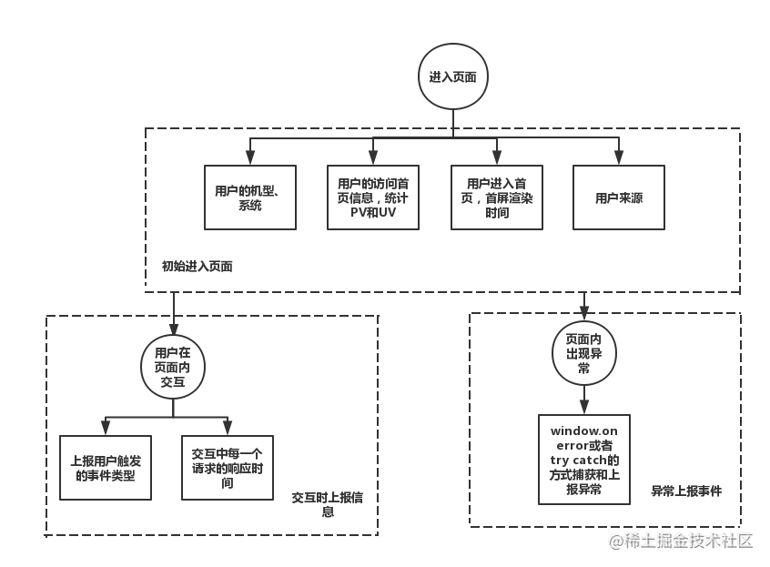
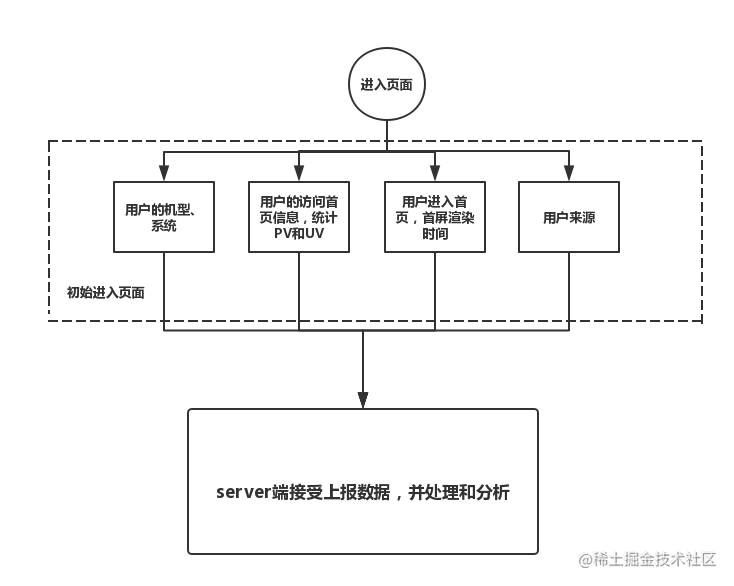

三个知识点** 👇：
pendingresolve()、reject()以及throw的话，这个 promise 的状态也是pendingpending状态下的 promise 不会执行回调函数then()◾ 最后一点：
let myPromise0 = new Promise();
console.log('myPromise0 :>> ', myPromise0);
Promise对象传入一个执行函数，否则将会报错。大家都知道需要为这个函数参数传入它自己的函数，也就是resolve()和reject()
原生的 promise 里面可以传入resolve和reject两个参数
let promise = new Promise((resolve, reject) => {})
那么我们也得允许手写这边可以传入这两个参数：
class myPromise {
constructor(func) {
+ func(this.resolve, this.reject);
}
resolve() {}
reject() {}
}
用static来创建静态属性：
+ static PENDING = 'pending';
+ static FULFILLED = 'fulfilled';
+ static REJECTED = 'rejected';
用 this.PromiseState 来保存实例的状态属性，
+ this.PromiseState = myPromise.PENDING;
那么在执行resolve()的时候就需要判断状态是否为 待定 pending，如果是 待定 pending的话就把状态改为 成功 fulfilled:
class myPromise {
resolve() {
+ if (this.PromiseState === myPromise.PENDING) {
+ this.PromiseState = myPromise.FULFILLED;
+ }
}
}
我们来new一个实例 🌰 执行一下代码就知道有没有问题了
// 测试代码
+ let promise1 = new myPromise((resolve, reject) => {
+ resolve('这次一定');
+ })
运行上面代码，报错 🦁：
Uncaught TypeError: Cannot read property 'PromiseState ' of undefined
resolve()和reject()方法里调用PromiseState ，前面是有this关键字的
resolve(result) {
➡ if (this.PromiseState === myPromise.PENDING) {
➡ this.PromiseState = myPromise.FULFILLED;
this.PromiseResult = result;
}
}
reject(reason) {
➡ if (this.PromiseState === myPromise.PENDING) {
➡ this.PromiseState = myPromise.REJECT;
this.PromiseResult = reason;
}
}
因为现在我们是在新实例被创建后再在外部环境下执行resolve()方法的，这里的resolve()看着像是和实例一起执行的，其实不然，也就相当于不在class内部使用这个this，而我们没有在外部定义任何PromiseState 变量，因此这里会报错
在这里我们就可以使用bind来绑定this就可以了 😺:
constructor(func) {
this.PromiseState = myPromise.PENDING;
this.PromiseResult = null;
+ func(this.resolve.bind(this), this.reject.bind(this));
对于resolve来说，这里就是给实例的resolve()方法绑定这个this为当前的实例对象，并且执行this.resolve()方法：
因为then是在创建实例后再进行调用的，因此我们再创建一个 类方法，可千万不要创建在 constructor 里面了~
我想应该有些同学突然失忆😶，不记得then怎么用了，我们就来稍微写一下原生的then方法：
let promise = new Promise((resolve, reject) => {
resolve('这次一定')
})
+ promise.then(
+ result => {
+ console.log(result);
+ },
+ reason => {
+ console.log(reason.message);
+ }
+ )
then方法可以传入两个参数，这两个参数都是函数，
一个是当状态为fulfilled 成功 时执行的代码，
另一个是当状态为 rejected 拒绝 时执行的代码。
因此我们就可以先给手写的then里面添加 两个参数：
onFulfilled 表示 “当状态为成功时”onRejected 表示 “当状态为拒绝时”class myPromise {
+ then(onFulfilled, onRejected) {}
}
Promise 只以 第一次为准，第一次成功就永久为fulfilled，第一次失败就永远状态为rejected
因此我们在手写的时候就必须进行判断 🤖：
◾ 如果当前实例的 PromiseState 状态属性为 fulfilled 成功 的话，我们就执行传进来的 onFulfilled 函数，并且为onFulfilled函数传入前面保留的PromiseResult属性值：
class myPromise {
then(onFulfilled, onRejected) {
+ if (this.PromiseState === myProise.FULFILLED) {
+ onFulfilled(this.PromiseResult);
+ }
}
}
在new Promise的时候，执行函数里面如果抛出错误，是会触发then方法的第二个参数，即即rejected状态的回调函数可以把错误的信息作为内容输出出来
到这里，有的同学可能会说，执行异常抛错，不是用catch()方法去接吗？为什么这里又说 是会触发then方法的第二个参数，即rejected状态的回调函数？😵
事实上, calling obj.catch(onRejected) 内部 calls obj.then(undefined, onRejected)。(这句话的意思是，我们显式使用obj.catch(onRejected)，内部实际调用的是obj.then(undefined, onRejected))
◾ 注意看下面的例子 🌰：
const promise = new Promise(function(resolve, reject) {
throw new Error('test');
});
promise.catch(function(error) {
console.log(error);
});
// Error: test
上面代码中，promise 抛出一个错误，就被catch()方法指定的回调函数捕获。注意，上面的写法与下面两种写法是等价的。
// 写法一
const promise = new Promise(function(resolve, reject) {
try {
throw new Error('test');
} catch(e) {
reject(e);
}
});
promise.catch(function(error) {
console.log(error);
});
// 写法二
const promise = new Promise(function(resolve, reject) {
reject(new Error('test'));
});
promise.catch(function(error) {
console.log(error);
});
比较上面两种写法，可以发现reject()方法的作用，等同于抛出错误。
这一点很重要，因为我们手写 Promise 就是用try/catch来处理异常，用的就是上面的思想。
◾ 一般来说，不要在then()方法里面定义 Reject 状态的回调函数（即then的第二个参数），总是使用catch方法。
// bad
promise
.then(function(data) {
// success
}, function(err) {
// error
});
// good
promise
.then(function(data) { //cb
// success
})
.catch(function(err) {
// error
});
上面代码中，第二种写法要好于第一种写法，
理由是第二种写法可以捕获前面then方法执行中的错误，也更接近同步的写法（try/catch）。
因此，建议总是使用catch()方法，而不使用then()方法的第二个参数。
回到正题
Uncaught未捕获
可以发现报错了😰，没有捕获到错误，没有把内容输出出来
◾ 我们可以在执行resolve()和reject()之前用try/catch进行判断，在构造函数 constructor里面完善代码，判断生成实例的时候是否有报错 🔍：
resolve()和reject()方法reject()方法，并且直接执行reject()方法class myPromise {
static PENDING = 'pending';
static FULFILLED = 'fulfilled';
static REJECTED = 'rejected';
constructor(func) {
this.PromiseState = myPromise.PENDING;
this.PromiseResult = null;
+ try {
func(this.resolve.bind(this), this.reject.bind(this));
+ } catch (error) {
+ this.reject(error)
+ }
}
}
◾ 注意这里不需要给reject()方法进行this的绑定了，因为这里是直接执行，而不是创建实例后再执行。
▪ func(this.resolve.bind(this), this.reject.bind(this)); 这里的this.reject意思是：把类方法reject()作为参数 传到构造函数constructor 里要执行的func()方法里，只是一个参数，并不执行，只有创建实例后调用reject()方法的时候才执行，此时this的指向已经变了，所以想要正确调用myPromise的reject()方法就要通过.bind(this))改变this指向。
▪ this.reject(error)，这里的this.reject()，是直接在构造函数里执行类方法，this指向不变，this.reject()就是直接调用类方法reject()，所以不用再进行this绑定。
原生 Promise 里规定then方法里面的两个参数如果不是函数的话就要被忽略，我们就故意在原生代码这里不传入函数作为参数：
结果就是 Uncaught TypeError: onFulfilled is not a function。浏览器帮你报错了，这不是我们想要的~😥 我们只想要自己来抛出错误，再来看看刚刚的手写then部分：
then(onFulfilled, onRejected) {
if (this.PromiseState === myPromise.FULFILLED) {
onFulfilled(this.PromiseResult);
}
if (this.PromiseState === myPromise.REJECTED) {
onRejected(this.PromiseResult);
}
}
我们会在里面分别执行成功和拒绝两个参数，可是我们不想修改这里的代码，那么就只能把不是函数的参数改为函数
Promise 规范如果 onFulfilled 和 onRejected 不是函数，就忽略他们。
所谓 “忽略” 并不是什么都不干，
onFulfilled来说 “忽略” 就是将value原封不动的返回，onRejected来说就是返回reason，onRejected因为是错误分支，我们返回reason应该throw一个Error:这里我们就可以用 条件运算符，我们在进行if判断之前进行预先判断：
▪ 如果onFulfilled参数是一个函数，就把原来的onFulfilled内容重新赋值给它，如果onFulfilled参数不是一个函数，就将value原封不动的返回
class myPromise {
...
then(onFulfilled, onRejected) {
+ onFulfilled = typeof onFulfilled === 'function' ? onFulfilled : value => value;
}
}
▪ 如果onRejected参数是一个函数，就把原来的onRejected内容重新赋值给它，如果onRejected参数不是一个函数，就throw一个Error
class myPromise {
...
then(onFulfilled, onRejected) {
+ onRejected = typeof onRejected === 'function' ? onRejected : reason => {
throw reason;
};
}
}
现在我们再来测试一下代码：
class myPromise {
...
}
let promise1 = new myPromise((resolve, reject) => {
resolve('这次一定');
})
promise1.then(
undefined,
reason => {
console.log('rejected:', reason)
}
)
可以说我们在手写的代码里面依旧没有植入异步功能，毕竟最基本的setTimeout我们都没有使用，
先了解一下原生 Promise 的一些运行顺序规则。
在这里我为原生代码添加上步骤信息：
console.log(1);
let promise = new Promise((resolve, reject) => {
console.log(2);
resolve('这次一定');
})
promise.then(
result => {
console.log('fulfilled:', result);
},
reason => {
console.log('rejected:', reason)
}
)
console.log(3);
console.log(1)，输出1promise实例，输出2，因为这里依旧是同步resolve的时候，修改结果值promise.then会进行异步操作，也就是我们 需要先把执行栈的内容清空，于是就执行console.log(3)，输出3promise.then里面的内容，也就是最后输出“fulfilled: 这次一定”▪ 我们用同样的测试代码应用在 手写代码 上面：
这次我们发现有些不同了😯，输出顺序为：
1 和 2 都没有问题，问题就是“fulfilled: 这次一定”和3这里的顺序不对
◾ 其实问题很简单，就是我们刚刚说的 没有设置异步执行 😶
我们二话不说直接给then方法里面添加setTimeout就可以了😎，
需要在进行if判断以后再添加setTimeout，要不然状态不符合添加异步也是没有意义的，然后在setTimeout里执行传入的函数参数：
class myPromise {
...
then(onFulfilled, onRejected) {
onFulfilled = typeof onFulfilled === 'function' ? onFulfilled : value => value;
onRejected = typeof onRejected === 'function' ? onRejected : reason => {
throw reason;
};
if (this.PromiseState === myPromise.FULFILLED) {
+ setTimeout(() => {
onFulfilled(this.PromiseResult);
+ });
}
if (this.PromiseState === myPromise.REJECTED) {
+ setTimeout(() => {
onRejected(this.PromiseResult);
+ });
}
}
}
在这里我们解决异步的方法是给onFulfilled和onRejected添加setTimeout，但是为什么要这么做呢？
◾ 这就要讲到 Promises/A+ 规范 了
规范 2.2.4 ：
onFulfilledoronRejectedmust not be called until theexecution contextstack contains only platform code. [3.1].
译文：
2.2.4 onFulfilled 和 onRejected 只有在执行环境堆栈仅包含平台代码时才可被调用 注1
规范对 2.2.4 做了注释：
3.1 Here “platform code” means engine, environment, and promise implementation code. In practice, this requirement ensures that
onFulfilledandonRejectedexecute asynchronously, after the event loop turn in whichthenis called, and with a fresh stack. This can be implemented with either a “macro-task” mechanism such as setTimeout orsetImmediate, or with a “micro-task” mechanism such as MutationObserver or process.nextTick. Since the promise implementation is considered platform code, it may itself contain a task-scheduling queue or “trampoline” in which the handlers are called.
译文：
3.1 这里的平台代码指的是引擎、环境以及 promise 的实施代码。实践中要确保 onFulfilled 和 onRejected 方法异步执行，且应该在 then 方法被调用的那一轮事件循环之后的新执行栈中执行。这个事件队列可以采用 “宏任务（macro-task）” 机制，比如setTimeout 或者 setImmediate； 也可以采用 “微任务（micro-task）” 机制来实现， 比如 MutationObserver 或者process.nextTick。 由于 promise 的实施代码本身就是平台代码（译者注： 即都是 JavaScript），故代码自身在处理在处理程序时可能已经包含一个任务调度队列或『跳板』)。
这里我们用的就是规范里讲到的 “宏任务” setTimeout。
异步的问题真的解决了吗？现在又要进入 Promise 另一个难点了，大家务必竖起耳朵啦😛
我们来给原生的 Promise 里添加setTimeout，使得resolve也异步执行，那么就会出现一个问题了，resolve是异步的，then也是异步的，究竟谁会先被调用呢？
console.log(1);
let promise = new Promise((resolve, reject) => {
console.log(2);
+ setTimeout(() => {
resolve('这次一定');
+ console.log(4);
+ });
})
promise.then(
result => {
console.log('fulfilled:', result);
},
reason => {
console.log('rejected:', reason)
}
)
console.log(3);
特别要注意的是当遇到setTimeout的时候被异步执行了，而resolve('这次一定')没有被马上执行，而是先执行console.log(4)，等到then的时候再执行resolve里保存的值。
这里涉及到了浏览器的事件循环，promise.then() 和 setTimeout() 都是异步任务，但实际上异步任务之间并不相同，因此他们的执行优先级也有区别。
不同的异步任务被分为两类：微任务 (micro task) 和 宏任务 (macro task)。
setTimeout()属于宏任务promise.then()属于微任务在一个事件循环中，异步事件返回结果后会被放到一个任务队列中。 然而，根据这个异步事件的类型，这个事件实际上会被对应的宏任务队列或者微任务队列中去。并且在当前执行栈为空的时候，主线程会 查看微任务队列是否有事件存在。 如果不存在，那么再去宏任务队列中取出一个事件并把对应的回到加入当前执行栈； 如果存在，则会依次执行队列中事件对应的回调，直到微任务队列为空，然后去宏任务队列中取出最前面的一个事件，把对应的回调加入当前执行栈… 如此反复，进入循环。
我们只需记住 当 当前执行栈执行完毕时会立刻先处理所有微任务队列中的事件，然后再去宏任务队列中取出一个事件。同一次事件循环中，微任务永远在宏任务之前执行。
回到正文
我们用同样的代码应用到手写的部分：
// 测试代码
console.log(1);
let promise1 = new myPromise((resolve, reject) => {
console.log(2);
setTimeout(() => {
resolve('这次一定');
console.log(4);
});
})
promise1.then(
result => {
console.log('fulfilled:', result);
},
reason => {
console.log('rejected:', reason)
}
)
console.log(3);
可以发现 fulfilled: 这次一定 并没有输出
我们可以先猜测一下，没有输出的原因很可能是因为then方法没有被执行，看看then方法里面是根据条件判断来执行代码的：也就是说很可能没有符合的条件，再换句话说可能没有符合的状态
那么我们就在三个位置分别输出当前的状态，这样分别来判断哪个位置出了问题:
class myPromise {
...
}
// 测试代码
console.log(1);
let promise1 = new myPromise((resolve, reject) => {
console.log(2);
setTimeout(() => {
+ console.log('A',promise1.PromiseState);
resolve('这次一定');
+ console.log('B',promise1.PromiseState);
console.log(4);
});
})
promise1.then(
result => {
+ console.log('C',promise1.PromiseState);
console.log('fulfilled:', result);
},
reason => {
console.log('rejected:', reason)
}
)
console.log(3);
这里涉及到事件循环，我们详细解读一下：
▪ 首先，执行console.log(1)，输出1
▪ 第二步，创建 promise，执行函数体里的console.log(2)，输出2
▪ 第三步，遇到setTimeout，setTimeout是宏任务，将setTimeout加入宏任务队列，等待执行
▪ 第四步，遇到promise.then()，promise.then()是微任务，将promise.then()加入微任务队列，等待执行
▪ 第五步，执行console.log(3)，输出3，此时当前执行栈已经清空
▪ 第六步，当前执行栈已经清空，先执行微任务队列的任务 promise.then()，发现 promise 的状态并没有改变，还是pending，所以没有输出。状态并没有改变的原因是：resolve('这次一定')是在setTimeout里的，但此时还没开始执行setTimeout，因为setTimeout是宏任务，宏任务在微任务后面执行
▪ 第七步，微任务队列已经清空，开始执行宏任务 setTimeout：
setTimeout(() => {
console.log('A',promise1.PromiseState);
resolve('这次一定');
console.log('B',promise1.PromiseState);
console.log(4);
});
▪ 第八步，执行 console.log('A',promise1.PromiseState)，此时 promise 状态还没发生变化，还是pending，所以输出 A pending
▪ 第九步，执行 resolve('这次一定');，改变 promise 的状态为fulfilled
▪ 第十步，执行 console.log('B',promise1.PromiseState)，输出 B fulfilled
▪ 第十一步，执行 console.log(4)，输出4
这里暂且认为我们写的 promise.then() 和原生一样，方便理解
◾ 分析完上面的代码，我们知道了，因为先执行了then方法，但发现这个时候状态依旧是 pending，而我们手写部分没有定义pending待定状态的时候应该做什么，因此就少了fulfilled: 这次一定 这句话的输出
所以我们就 直接给then方法里面添加待定状态的情况就可以了，也就是用if进行判断:
class myPromise {
...
then(onFulfilled, onRejected) {
+ if (this.PromiseState === myPromise.PENDING) {
+
+ }
}
}
◾ 但是问题来了，当then里面判断到 pending 待定状态时我们要干什么？
因为这个时候resolve或者reject还没获取到任何值，因此我们必须让then里的函数稍后再执行，等resolve执行了以后，再执行then
为了保留then里的函数，我们可以创建 数组 来 保存函数。
为什么用 数组 来保存这些回调呢？因为一个 promise 实例可能会多次 then，也就是经典的 链式调用，而且数组是先入先出的顺序
在实例化对象的时候就让每个实例都有这两个数组：
onFulfilledCallbacks ：用来 保存成功回调onRejectedCallbacks ：用来 保存失败回调class myPromise {
constructor(func) {
this.PromiseState = myPromise.PENDING;
this.PromiseResult = null;
+ this.onFulfilledCallbacks = []; // 保存成功回调
+ this.onRejectedCallbacks = []; // 保存失败回调
}
}
◾ 接着就完善then里面的代码，也就是当判断到状态为 pending 待定时，暂时保存两个回调，也就是说暂且把then里的两个函数参数分别放在两个数组里面：
class myPromise {
then(onFulfilled, onRejected) {
onFulfilled = typeof onFulfilled === 'function' ? onFulfilled : () => {};
onRejected = typeof onRejected === 'function' ? onRejected : () => {};
if (this.PromiseState === myPromise.PENDING) {
+ this.onFulfilledCallbacks.push(onFulfilled);
+ this.onRejectedCallbacks.push(onRejected);
}
}
}
◾ 数组里面放完函数以后，就可以完善resolve和reject的代码了
在执行resolve或者reject的时候，遍历自身的callbacks数组，看看数组里面有没有then那边 保留 过来的 待执行函数，然后逐个执行数组里面的函数，执行的时候会传入相应的参数：
class myPromise {
resolve(result) {
if (this.PromiseState === myPromise.PENDING) {
this.PromiseState = myPromise.FULFILLED;
this.PromiseResult = result;
+ this.onFulfilledCallbacks.forEach(callback => {
+ callback(result)
+ })
}
}
}
但是细心的同学可能已经发现了，代码输出顺序还是不太对，原生 Promise 中，fulfilled: 这次一定 是最后输出的
◾ 这里有一个很多人忽略的小细节，要确保 onFulfilled 和 onRejected 方法异步执行，且应该在 then 方法被调用的那一轮事件循环之后的新执行栈中执行。因此，在保存成功和失败回调时也要添加 setTimeout
class myPromise {
...
then(onFulfilled, onRejected) {
onFulfilled = typeof onFulfilled === 'function' ? onFulfilled : value => value;
onRejected = typeof onRejected === 'function' ? onRejected : reason => {
throw reason;
};
if (this.PromiseState === myPromise.PENDING) {
+ this.onFulfilledCallbacks.push(() => {
+ setTimeout(() => {
+ onFulfilled(this.PromiseResult);
+ });
+ });
+ this.onRejectedCallbacks.push(() => {
+ setTimeout(() => {
+ onRejected(this.PromiseResult);
+ });
+ });
}
if (this.PromiseState === myPromise.FULFILLED) {
setTimeout(() => {
onFulfilled(this.PromiseResult);
});
}
if (this.PromiseState === myPromise.REJECTED) {
setTimeout(() => {
onRejected(this.PromiseResult);
});
}
}
}
我们常常用到 new Promise().then().then()，这就是链式调用，用来解决回调地狱
我们先试一下当前的myPromise是否可以实现链式调用：
class myPromise {
...
}
// 测试代码
let p1 = new myPromise((resolve, reject) => {
resolve(10)
})
p1.then(res => {
console.log('fulfilled', res);
return 2 * res
}).then(res => {
console.log('fulfilled', res)
})
毫无疑问在控制台里面是会报错的，提示 then 方法没有定义：
Uncaught TypeError: Cannot read property 'then' of undefined
Promise.prototype.then() 方法返回一个新的 Promise 实例（注意，不是原来那个Promise实例）。因此可以采用链式写法，即 then 方法后面再调用另一个 then 方法。
规范在2.2.7中这样描述 👇：
◾ 2.2.7 then 方法必须返回一个 promise 对象
promise2 = promise1.then(onFulfilled, onRejected);
onFulfilled 或者 onRejected 返回一个值 x ，则运行下面的 Promise 解决过程：[[Resolve]](promise2, x)onFulfilled 或者 onRejected 抛出一个异常 e ，则 promise2 必须拒绝执行，并返回拒因 eonFulfilled 不是函数且 promise1 成功执行， promise2 必须成功执行并返回相同的值onRejected 不是函数且 promise1 拒绝执行， promise2 必须拒绝执行并返回相同的据因理解上面的“返回”部分非常重要，即：不论 promise1 被 reject 还是被 resolve 时 promise2 都会执行 Promise 解决过程：[[Resolve]](promise2, x)，只有出现异常时才会被 rejected。
注意 2.2.7.1 ：
If either onFulfilled or onRejected returns a value x,
run the Promise Resolution Procedure [[Resolve]](promise2, x).
即：如果 onFulfilled 或者 onRejected 返回一个值 x ，则运行下面的 Promise 解决过程：[[Resolve]](promise2, x)
规范在 2.3 中详细描述 Promise 解决过程 The Promise Resolution Procedure 👇
◾ 2.3 Promise 解决过程
Promise 解决过程 是一个抽象的操作，其需输入一个 promise 和一个值，我们表示为 [[Resolve]](promise, x)，如果 x 有 then 方法且看上去像一个 Promise ，解决程序即尝试使 promise 接受 x 的状态；否则其用 x 的值来执行 promise 。
这种 thenable 的特性使得 Promise 的实现更具有通用性：只要其暴露出一个遵循 Promises/A+ 协议的 then 方法即可；这同时也使遵循 Promises/A+ 规范的实现可以与那些不太规范但可用的实现能良好共存。
运行 [[Resolve]](promise, x) 需遵循以下步骤：
▪ 2.3.1 x 与 promise 相等
如果 promise 和 x 指向同一对象，以 TypeError 为据因拒绝执行 promise
▪ 2.3.2 x 为 Promise
如果 x 为 Promise ，则使 promise 接受 x 的状态
x 处于等待态， promise 需保持为等待态直至 x 被执行或拒绝x 处于执行态，用相同的值执行 promisex 处于拒绝态，用相同的据因拒绝 promise▪ 2.3.3 x 为对象或函数
如果 x 为对象或者函数：
2.3.3.1 把 x.then 赋值给 then
2.3.3.2 如果取 x.then 的值时抛出错误 e ，则以 e 为据因拒绝 promise
2.3.3.3 如果 then 是函数，将 x 作为函数的作用域 this 调用之。传递两个回调函数作为参数，第一个参数叫做 resolvePromise ，第二个参数叫做 rejectPromise:
2.3.3.3.1 如果 resolvePromise 以值 y 为参数被调用，则运行 [[Resolve]](promise, y)
2.3.3.3.2 如果 rejectPromise 以据因 r 为参数被调用，则以据因 r 拒绝 promise
2.3.3.3.3 如果 resolvePromise 和 rejectPromise 均被调用，或者被同一参数调用了多次，则优先采用首次调用并忽略剩下的调用
2.3.3.3.4 如果调用 then 方法抛出了异常 e：
resolvePromise 或 rejectPromise 已经被调用，则忽略之e 为据因拒绝 promise2.3.3.4 如果 then 不是函数，以 x 为参数执行 promise
▪ 2.3.4 如果 x 不为对象或者函数，以 x 为参数执行 promise
如果一个 promise 被一个循环的 thenable 链中的对象解决，而 [[Resolve]](promise, thenable) 的递归性质又使得其被再次调用，根据上述的算法将会陷入无限递归之中。算法虽不强制要求，但也鼓励施者检测这样的递归是否存在，若检测到存在则以一个可识别的 TypeError 为据因来拒绝 promise。
基于规范的描述，我们得到以下几点：
◾ 1. then方法本身会返回一个新的Promise对象，返回一个新的 Promise 以后它就有自己的then方法，这样就能实现无限的链式
◾ 2. 不论 promise1 被 resolve() 还是被 reject() 时 promise2 都会执行 Promise 解决过程：[[Resolve]](promise2, x)
在手写这里我们把这个 Promise 解决过程：[[Resolve]](promise2, x) 命名为 resolvePromise() 方法，参数为 (promise2, x, resolve, reject) 即：
function resolvePromise(promise2, x, resolve, reject) {}
resolvePromise()各参数的意义：
/**
* 对resolve()、reject() 进行改造增强 针对resolve()和reject()中不同值情况 进行处理
* @param {promise} promise2 promise1.then方法返回的新的promise对象
* @param {[type]} x promise1中onFulfilled或onRejected的返回值
* @param {[type]} resolve promise2的resolve方法
* @param {[type]} reject promise2的reject方法
*/
function resolvePromise(promise2, x, resolve, reject) {}
其实，这个resolvePromise(promise2, x, resolve, reject) 即 Promise 解决过程：[[Resolve]](promise2, x) 就是对resolve()、reject() 进行改造增强， 针对resolve()和reject()中不同值情况 进行处理。
resolve()和reject() 返回的 x 值的几种情况：
普通值
Promise 对象
thenable 对象 / 函数
then 方法返回一个新的 Promise
◾ 2.2.7 规范 then 方法必须返回一个 promise 对象
我们在then方法里面返回一个 新的手写Promise实例，再把原来的代码复制上去：
class myPromise {
...
then(onFulfilled, onRejected) {
onFulfilled = typeof onFulfilled === 'function' ? onFulfilled : value => value;
onRejected = typeof onRejected === 'function' ? onRejected : reason => {
throw reason;
};
+ const promise2 = new myPromise((resolve, reject) => {
if (this.PromiseState === myPromise.FULFILLED) {
setTimeout(() => {
onFulfilled(this.PromiseResult);
});
} else if (this.PromiseState === myPromise.REJECTED) {
setTimeout(() => {
onRejected(this.PromiseResult);
});
} else if (this.PromiseState === myPromise.PENDING) {
this.onFulfilledCallbacks.push(() => {
setTimeout(() => {
onFulfilled(this.PromiseResult);
});
});
this.onRejectedCallbacks.push(() => {
setTimeout(() => {
onRejected(this.PromiseResult);
});
});
}
+ })
+ return promise2
}
}
◾ 2.2.7.1 规范 如果 onFulfilled 或者 onRejected 返回一个值 x ，则运行下面的 Promise 解决过程：[[Resolve]](promise2, x)
class myPromise {
...
then(onFulfilled, onRejected) {
const promise2 = new myPromise((resolve, reject) => {
if (this.PromiseState === myPromise.FULFILLED) {
setTimeout(() => {
+ let x = onFulfilled(this.PromiseResult);
+ resolvePromise(promise2, x, resolve, reject);
});
} else if (this.PromiseState === myPromise.REJECTED) {
setTimeout(() => {
+ let x = onRejected(this.PromiseResult);
+ resolvePromise(promise2, x, resolve, reject);
});
}
})
return promise2
}
}
+/**
+ * 对resolve()、reject() 进行改造增强 针对resolve()和reject()中不同值情况 进行处理
+ * @param {promise} promise2 promise1.then方法返回的新的promise对象
+ * @param {[type]} x promise1中onFulfilled或onRejected的返回值
+ * @param {[type]} resolve promise2的resolve方法
+ * @param {[type]} reject promise2的reject方法
+ */
+ function resolvePromise(promise2, x, resolve, reject) {}
我们在 myPromise 类外面声明了一个 Promise 解决过程：
◾ 2.2.7.2 如果 onFulfilled 或者 onRejected 抛出一个异常 e ，则 promise2 必须拒绝执行，并返回拒因 e
class myPromise {
...
then(onFulfilled, onRejected) {
const promise2 = new myPromise((resolve, reject) => {
if (this.PromiseState === myPromise.FULFILLED) {
setTimeout(() => {
+ try {
let x = onFulfilled(this.PromiseResult);
resolvePromise(promise2, x, resolve, reject);
+ } catch (e) {
+ reject(e); // 捕获前面onFulfilled中抛出的异常
+ }
});
} else if (this.PromiseState === myPromise.REJECTED) {
setTimeout(() => {
+ try {
let x = onRejected(this.PromiseResult);
resolvePromise(promise2, x, resolve, reject);
+ } catch (e) {
+ reject(e)
+ }
});
} else if (this.PromiseState === myPromise.PENDING) {
this.onFulfilledCallbacks.push(() => {
setTimeout(() => {
onFulfilled(this.PromiseResult);
});
});
this.onRejectedCallbacks.push(() => {
setTimeout(() => {
onRejected(this.PromiseResult);
});
});
}
})
return promise2
}
}
◾ fulfilled 和 rejected 状态处理完，不要忘了 pending 状态的情况
我们在 pending 状态保存的 resolve() 和 reject() 回调也要符合 2.2.7.1 和 2.2.7.2 规范：
如果
onFulfilled或者onRejected返回一个值x，则运行 Promise 解决过程：[[Resolve]](promise2, x)如果onFulfilled或者onRejected抛出一个异常e，则promise2必须拒绝执行，并返回拒因e
class myPromise {
...
then(onFulfilled, onRejected) {
const promise2 = new myPromise((resolve, reject) => {
} else if (this.PromiseState === myPromise.PENDING) {
this.onFulfilledCallbacks.push(() => {
setTimeout(() => {
+ try {
+ let x = onFulfilled(this.PromiseResult);
+ resolvePromise(promise2, x, resolve, reject)
+ } catch (e) {
+ reject(e);
+ }
});
});
this.onRejectedCallbacks.push(() => {
setTimeout(() => {
+ try {
+ let x = onRejected(this.PromiseResult);
+ resolvePromise(promise2, x, resolve, reject);
+ } catch (e) {
+ reject(e);
+ }
});
});
}
})
return promise2
}
}
◾ 2.2.7.3 如果 onFulfilled 不是函数且 promise1 成功执行， promise2 必须成功执行并返回相同的值
class myPromise {
...
then(onFulfilled, onRejected) {
const promise2 = new myPromise((resolve, reject) => {
if (this.PromiseState === myPromise.FULFILLED) {
setTimeout(() => {
try {
+ if (typeof onFulfilled !== 'function') {
+ resolve(this.PromiseResult);
+ } else {
let x = onFulfilled(this.PromiseResult);
resolvePromise(promise2, x, resolve, reject);
+ }
} catch (e) {
reject(e);
}
});
})
return promise2
}
}
◾ 2.2.7.4 如果 onRejected 不是函数且 promise1 拒绝执行， promise2 必须拒绝执行并返回相同的据因
class myPromise {
...
then(onFulfilled, onRejected) {
const promise2 = new myPromise((resolve, reject) => {
else if (this.PromiseState === myPromise.REJECTED) {
setTimeout(() => {
try {
+ if (typeof onRejected !== 'function') {
+ reject(this.PromiseResult);
+ } else {
let x = onRejected(this.PromiseResult);
resolvePromise(promise2, x, resolve, reject);
+ }
} catch (e) {
reject(e)
}
});
}
})
return promise2
}
}
规范 2.2.7.3 和 2.2.7.4 对 onFulfilled 和 onRejected 不是函数的情况做了更详细的描述，根据描述我们对 onFulfilled 和 onRejected 引入了新的参数校验，所以之前的参数校验就可以退役了：
class myPromise {
...
then(onFulfilled, onRejected) {
- onFulfilled = typeof onFulfilled === 'function' ? onFulfilled : value => value;
- onRejected = typeof onRejected === 'function' ? onRejected : reason => {
- throw reason;
- };
...
}
}
`**
◾ 2.3.1 如果 promise 和 x 指向同一对象，以 TypeError 为据因拒绝执行 promise
如果从 onFulfilled 或 onRejected 中返回的 x 就是 promise2，会导致 循环引用报错，这部分的处理就是要解决这个问题。
function resolvePromise(promise2, x, resolve, reject) {
+ if (x === promise2) {
+ throw new TypeError('Chaining cycle detected for promise');
+ }
}
在这里我们只需要抛出一个 TypeError 的异常即可，因为调用 resolvePromise 方法外层的 try...catch 会抓住这个异常，然后 以 TypeError 为据因拒绝执行 promise。
举一个 循环引用 的例子🌰：
const promise = new Promise((resolve, reject) => {
resolve(100)
})
const p1 = promise.then(value => {
console.log(value)
return p1
})
使用原生 Promise 执行这个代码，会报类型错误：
◾ 2.3.2 如果 x 为 Promise ，则使 promise 接受 x 的状态
function resolvePromise(promise2, x, resolve, reject) {
if (x === promise2) {
throw new TypeError('Chaining cycle detected for promise');
}
+ if (x instanceof myPromise) {
+ /**
+ * 2.3.2 如果 x 为 Promise ，则使 promise2 接受 x 的状态
+ * 也就是继续执行x，如果执行的时候拿到一个y，还要继续解析y
+ */
+ x.then(y => {
+ resolvePromise(promise2, y, resolve, reject)
+ }, reject);
+ }
}
◾ 2.3.3 如果 x 为对象或者函数 ◾ 2.3.4 如果 x 不为对象或者函数，以 x 为参数执行 promise
在判断x是对象或函数时，x 不能是 null，因为 typeof null的值也为 object
我们应该显式的声明 x != null，这样 当 x 为 null 时，直接执行resolve(x)，否则，如果不这样不声明，x 为 null 时就会走到catch然后reject，这不是我们要的，所以需要检测下null：
if (x != null && ((typeof x === 'object' || (typeof x === 'function'))))
◾ 2.3.3 和 2.3.4 规范实现如下：
function resolvePromise(promise2, x, resolve, reject) {
if (x === promise2) {
throw new TypeError('Chaining cycle detected for promise');
}
if (x instanceof myPromise) {
x.then(y => {
resolvePromise(promise2, y, resolve, reject)
}, reject);
+ } else if (x !== null && ((typeof x === 'object' || (typeof x === 'function')))) {
+ // 2.3.3 如果 x 为对象或函数
+ try {
+ // 2.3.3.1 把 x.then 赋值给 then
+ var then = x.then;
+ } catch (e) {
+ // 2.3.3.2 如果取 x.then 的值时抛出错误 e ，则以 e 为据因拒绝 promise
+ return reject(e);
+ }
+
+ /**
+ * 2.3.3.3
+ * 如果 then 是函数，将 x 作为函数的作用域 this 调用之。
+ * 传递两个回调函数作为参数，
+ * 第一个参数叫做 `resolvePromise` ，第二个参数叫做 `rejectPromise`
+ */
+ if (typeof then === 'function') {
+ // 2.3.3.3.3 如果 resolvePromise 和 rejectPromise 均被调用，或者被同一参数调用了多次，则优先采用首次调用并忽略剩下的调用
+ let called = false; // 避免多次调用
+ try {
+ then.call(
+ x,
+ // 2.3.3.3.1 如果 resolvePromise 以值 y 为参数被调用，则运行 [[Resolve]](promise, y)
+ y => {
+ if (called) return;
+ called = true;
+ resolvePromise(promise2, y, resolve, reject);
+ },
+ // 2.3.3.3.2 如果 rejectPromise 以据因 r 为参数被调用，则以据因 r 拒绝 promise
+ r => {
+ if (called) return;
+ called = true;
+ reject(r);
+ }
+ )
+ } catch (e) {
+ /**
+ * 2.3.3.3.4 如果调用 then 方法抛出了异常 e
+ * 2.3.3.3.4.1 如果 resolvePromise 或 rejectPromise 已经被调用，则忽略之
+ */
+ if (called) return;
+ called = true;
+
+ /**
+ * 2.3.3.3.4.2 否则以 e 为据因拒绝 promise
+ */
+ reject(e);
+ }
+ } else {
+ // 2.3.3.4 如果 then 不是函数，以 x 为参数执行 promise
+ resolve(x);
+ }
+ } else {
+ // 2.3.4 如果 x 不为对象或者函数，以 x 为参数执行 promise
+ return resolve(x);
+ }
}
生成实例对象的传统方法是通过构造函数。下面是一个例子。
function Point(x, y) {
this.x = x;
this.y = y;
}
Point.prototype.toString = function () {
return '(' + this.x + ', ' + this.y + ')';
};
var p = new Point(1, 2);
ES6 提供了更接近传统语言的写法，引入了 Class（类）这个概念，作为对象的模板。
基本上，ES6 的class可以看作只是一个语法糖，它的绝大部分功能，ES5 都可以做到
用 ES6 的class改写，就是下面这样。
class Point {
constructor(x, y) {
this.x = x;
this.y = y;
}
toString() {
return '(' + this.x + ', ' + this.y + ')';
}
}
上面代码定义了一个 “类”，可以看到里面有一个constructor()方法，这就是构造方法，而this关键字则代表实例对象。
◾ Point类除了构造方法，还定义了一个toString()方法。
注意，定义toString()方法的时候，前面不需要加上function这个关键字，直接把函数定义放进去了就可以了。
另外，方法与方法之间不需要逗号分隔，加了会报错。
class Point {
// ...
}
typeof Point // "function"
Point === Point.prototype.constructor // true
上面代码表明，类的数据类型就是函数，类本身就指向构造函数。
使用的时候，也是直接对类使用new命令，跟构造函数的用法完全一致。
class Bar {
doStuff() {
console.log('stuff');
}
}
const b = new Bar();
b.doStuff() // "stuff"
构造函数的prototype属性，在 ES6 的 “类” 上面继续存在。事实上，类的所有方法都定义在类的prototype属性上面。
class Point {
constructor() {
// ...
}
toString() {
// ...
}
toValue() {
// ...
}
}
// 等同于
Point.prototype = {
constructor() {},
toString() {},
toValue() {},
};
上面代码中，constructor()、toString()、toValue()这三个方法，其实都是定义在Point.prototype上面。
因此，在类的实例上面调用方法，其实就是调用原型上的方法。
class B {}
const b = new B();
b.constructor === B.prototype.constructor // true
上面代码中，b是B类的实例，它的constructor()方法就是B类原型的constructor()方法。
由于类的方法都定义在prototype对象上面，所以类的新方法可以添加在prototype对象上面。Object.assign()方法可以很方便地一次向类添加多个方法。
class Point {
constructor(){
// ...
}
}
Object.assign(Point.prototype, {
toString(){},
toValue(){}
});
prototype对象的constructor()属性，直接指向 “类” 的本身，这与 ES5 的行为是一致的。
Point.prototype.constructor === Point // true
class Point {
constructor(x, y) {
// ...
}
toString() {
// ...
}
}
Object.keys(Point.prototype)
// []
Object.getOwnPropertyNames(Point.prototype)
// ["constructor","toString"]
上面代码中，toString()方法是Point类内部定义的方法，它是不可枚举的。这一点与 ES5 的行为不一致。
var Point = function (x, y) {
// ...
};
Point.prototype.toString = function () {
// ...
};
Object.keys(Point.prototype)
// ["toString"]
Object.getOwnPropertyNames(Point.prototype)
// ["constructor","toString"]
上面代码采用 ES5 的写法，toString()方法就是可枚举的。
注：在 JavaScript 中，对象的属性分为可枚举和不可枚举之分。可枚举性决定了这个属性能否被 for…in 查找遍历到。
可枚举属性是指那些内部 “可枚举” 标志设置为
true的属性，对于通过直接的赋值和属性初始化的属性，该标识值默认为即为true，对于通过Object.defineProperty等定义的属性，该标识值默认为false。可枚举的属性可以通过for...in循环进行遍历（除非该属性名是一个 Symbol）。
属性的枚举性会影响以下三个函数的结果：
for…in
Object.keys()
JSON.stringify
constructor 是一种用于创建和初始化class创建的对象的特殊方法。
class Polygon {
constructor() {
this.name = 'Polygon';
}
}
const poly1 = new Polygon();
console.log(poly1.name);
// expected output: "Polygon"
constructor()方法是类的默认方法，通过new命令生成对象实例时，自动调用该方法。一个类必须有constructor()方法，如果没有显式定义，一个空的constructor()方法会被默认添加。
class Point {
}
// 等同于
class Point {
constructor() {}
}
上面代码中，定义了一个空的类Point，JavaScript 引擎会自动为它添加一个空的constructor()方法。
constructor()方法默认返回实例对象（即this），完全可以指定返回另外一个对象。
class Foo {
constructor() {
return Object.create(null);
}
}
new Foo() instanceof Foo
// false
上面代码中，constructor()函数返回一个全新的对象，结果导致实例对象不是Foo类的实例。
类必须使用new调用，否则会报错。这是它跟普通构造函数的一个主要区别，后者不用new也可以执行。
class Foo {
constructor() {
return Object.create(null);
}
}
Foo()
// TypeError: Class constructor Foo cannot be invoked without 'new'
在一个类中只能有一个名为 “constructor” 的特殊方法。 一个类中出现多次构造函数 (constructor)方法将会抛出一个 SyntaxError错误。
在一个构造方法中可以使用super关键字来调用一个父类的构造方法。
如果没有显式指定构造方法，则会添加默认的 constructor 方法。
如果不指定一个构造函数 (constructor) 方法, 则使用一个默认的构造函数(constructor)。
◾ 使用 constructor 方法
class Square extends Polygon {
constructor(length) {
// 在这里, 它调用了父类的构造函数, 并将 lengths 提供给 Polygon 的"width"和"height"
super(length, length);
// 注意: 在派生类中, 必须先调用 super() 才能使用 "this"。
// 忽略这个，将会导致一个引用错误。
this.name = 'Square';
}
get area() {
return this.height * this.width;
}
set area(value) {
// 注意：不可使用 this.area = value
// 否则会导致循环call setter方法导致爆栈
this._area = value;
}
}
这里包含两个重要知识点：
set area(value)中 不可使用 this.area = value，否则会导致循环 call setter 方法导致爆栈◾ 默认构造方法
如前所述，如果不指定构造方法，则使用默认构造函数。对于基类，默认构造函数是：
constructor() {}
Copy to Clipboard
对于派生类，默认构造函数是：
constructor(...args) {
super(...args);
}
class 的实例化必须通过 new 关键字。
class Example {}
let exam1 = Example();
// Class constructor Example cannot be invoked without 'new'
◾ 实例化对象
类的所有实例共享一个原型对象。
class Example {
constructor(a, b) {
this.a = a;
this.b = b;
console.log('Example');
}
sum() {
return this.a + this.b;
}
}
let exam1 = new Example(2, 1);
let exam2 = new Example(3, 1);
console.log(exam1._proto_ == exam2._proto_); // true
exam1._proto_.sub = function () {
return this.a - this.b;
}
console.log(exam1.sub()); // 1
console.log(exam2.sub()); // 2
上面代码中，exam1和exam2都是Example的实例，它们的原型都是Example.prototype，所以__proto__属性是相等的。
这也意味着，可以通过实例的__proto__属性为 “类” 添加方法。
__proto__并不是语言本身的特性，这是各大厂商具体实现时添加的私有属性，虽然目前很多现代浏览器的 JS 引擎中都提供了这个私有属性，但依旧不建议在生产中使用该属性，避免对环境产生依赖。生产环境中，我们可以使用Object.getPrototypeOf方法来获取实例对象的原型，然后再来为原型添加方法 / 属性。
使用实例的__proto__属性改写原型，必须相当谨慎，不推荐使用，因为这会改变 “类” 的原始定义，影响到所有实例。
在 “类” 的内部可以使用get和set关键字，对某个属性设置存值函数和取值函数，拦截该属性的存取行为。
class MyClass {
constructor() {
// ...
}
get prop() {
return 'getter';
}
set prop(value) {
console.log('setter: '+value);
}
}
let inst = new MyClass();
inst.prop = 123;
// setter: 123
inst.prop
// 'getter'
上面代码中，prop属性有对应的存值函数和取值函数，因此赋值和读取行为都被自定义了。
存值函数和取值函数是设置在属性的 Descriptor 对象上的。
class CustomHTMLElement {
constructor(element) {
this.element = element;
}
get html() {
return this.element.innerHTML;
}
set html(value) {
this.element.innerHTML = value;
}
}
var descriptor = Object.getOwnPropertyDescriptor(
CustomHTMLElement.prototype, "html"
);
"get" in descriptor // true
"set" in descriptor // true
上面代码中，存值函数和取值函数是定义在html属性的描述对象上面，这与 ES5 完全一致。
class Example {
constructor(a, b) {
this.a = a; // 实例化时调用 set 方法
this.b = b;
}
get a() {
console.log('getter');
return this.a;
}
set a(a) {
console.log('setter');
this.a = a; // 自身递归调用
}
}
let exam = new Example(1, 2); // 不断输出 setter ，最终导致 RangeError
class Example1 {
constructor(a, b) {
this.a = a;
this.b = b;
}
get a() {
console.log('getter');
return this._a;
}
set a(a) {
console.log('setter');
this._a = a;
}
}
let exam1 = new Example1(1, 2); // 只输出 setter , 不会调用 getter 方法
console.log(exam1._a); // 1, 可以直接访问
◾ getter 不可单独出现
class Example {
constructor(a) {
this.a = a;
}
get a() {
return this.a;
}
}
let exam = new Example(1);
// Uncaught TypeError: Cannot set property a of #<Example> which has only a getter
◾ getter 与 setter 必须同级出现
class Father {
constructor() {}
get a() {
return this._a;
}
}
class Child extends Father {
constructor() {
super();
}
set a(a) {
this._a = a;
}
}
let test = new Child();
test.a = 2;
console.log(test.a); // undefined
正确写法：创建类的时候同时声明get 和set，或者把 get 和set都放在子类中
class Father1 {
constructor() {}
// 或者都放在子类中
get a() {
return this._a;
}
set a(a) {
this._a = a;
}
}
class Child1 extends Father1 {
constructor() {
super();
}
}
let test1 = new Child1();
test1.a = 2;
console.log(test1.a); // 2
类（class）通过 static 关键字定义静态方法。不能在类的实例上调用静态方法，而应该通过类本身调用。这 些通常是实用程序方法，例如创建或克隆对象的功能。
类相当于实例的原型，所有在类中定义的方法，都会被实例继承。如果在一个方法前，加上static关键字，就表示该方法不会被实例继承，而是直接通过类来调用，这就称为 “静态方法”。
class Foo {
static classMethod() {
return 'hello';
}
}
Foo.classMethod() // 'hello'
var foo = new Foo();
foo.classMethod()
// TypeError: foo.classMethod is not a function
上面代码中，Foo类的classMethod方法前有static关键字，表明该方法是一个静态方法，可以直接在Foo类上调用（Foo.classMethod()），而不是在Foo类的实例上调用。如果在实例上调用静态方法，会抛出一个错误，表示不存在该方法。
◾ 注意，如果静态方法包含this关键字，这个this指的是类，而不是实例。
class Foo {
static bar() {
this.baz();
}
static baz() {
console.log('hello');
}
baz() {
console.log('world');
}
}
Foo.bar() // hello
上面代码中，静态方法bar调用了this.baz，这里的this指的是Foo类，而不是Foo的实例，等同于调用Foo.baz。另外，从这个例子还可以看出，静态方法可以与非静态方法重名。
◾ 父类的静态方法，可以被子类继承。
class Foo {
static classMethod() {
return 'hello';
}
}
class Bar extends Foo {
}
Bar.classMethod() // 'hello'
上面代码中，父类Foo有一个静态方法，子类Bar可以调用这个方法。
◾ 静态方法也是可以从super对象上调用的。
class Foo {
static classMethod() {
return 'hello';
}
}
class Bar extends Foo {
static classMethod() {
return super.classMethod() + ', too';
}
}
Bar.classMethod() // "hello, too"
super 关键字用于访问和调用一个对象的父对象上的函数。
在构造函数中使用时，super关键字将单独出现，并且必须在使用this关键字之前使用。super关键字也可以用来调用父对象上的函数。
◾ 调用父类的构造函数
class Polygon {
constructor(height, width) {
this.name = 'Rectangle';
this.height = height;
this.width = width;
}
sayName() {
console.log('Hi, I am a ', this.name + '.');
}
get area() {
return this.height * this.width;
}
set area(value) {
this._area = value;
}
}
class Square extends Polygon {
constructor(length) {
this.height; // 这样直接 this.heigh t会报错：ReferenceError，因为 super 需要先被调用！
// 这里，它调用父类的构造函数的,
// 作为Polygon 的 height, width
super(length, length);
// 注意: 在派生的类中, 在你可以使用'this'之前, 必须先调用super()。
// 忽略这, 这将导致引用错误。
this.name = 'Square';
}
}
◾ 调用父类上的静态方法
class Rectangle {
constructor() {}
static logNbSides() {
return 'I have 4 sides';
}
}
class Square extends Rectangle {
constructor() {}
static logDescription() {
return super.logNbSides() + ' which are all equal';
}
}
Square.logDescription(); // 'I have 4 sides which are all equal'
◾ 子类 constructor 方法中必须有 super ，且必须出现在 this 之前。
下面是两个错误写法：
class Father {
constructor() {}
}
class Child extends Father {
constructor() {}
}
let test = new Child();
// Uncaught ReferenceError: Must call super constructor in derived class before accessing 'this' or returning from derived constructor
class Father {
constructor() {}
}
class Child extends Father {
or
constructor(a) {
this.a = a;
super();
}
}
let test = new Child();
// Uncaught ReferenceError: Must call super constructor in derived class before accessing 'this' or returning from derived constructor
◾ 调用父类构造函数, 只能出现在子类的构造函数。
class Father {
test() {
return 0;
}
static test1() {
return 1;
}
}
class Child extends Father {
constructor() {
super();
}
}
class Child1 extends Father {
test2() {
super(); // Uncaught SyntaxError: 'super' keyword unexpected
// here
}
}
◾ 调用父类方法, super 作为对象，在普通方法中，指向父类的原型对象，在静态方法中，指向父类。
class Child2 extends Father {
constructor(){
super();
// 调用父类普通方法
console.log(super.test()); // 0
}
static test3(){
// 调用父类静态方法
return super.test1+2;
}
}
Child2.test3(); // 3
Class 可以通过extends关键字实现继承，这比 ES5 的通过修改原型链实现继承，要清晰和方便很多。
class Point {
}
class ColorPoint extends Point {
}
上面代码定义了一个ColorPoint类，该类通过extends关键字，继承了Point类的所有属性和方法。但是由于没有部署任何代码，所以这两个类完全一样，等于复制了一个Point类。下面，我们在ColorPoint内部加上代码。
class ColorPoint extends Point {
constructor(x, y, color) {
super(x, y); // 调用父类的constructor(x, y)
this.color = color;
}
toString() {
return this.color + ' ' + super.toString(); // 调用父类的toString()
}
}
上面代码中，constructor方法和toString方法之中，都出现了super关键字，它在这里表示父类的构造函数，用来新建父类的this对象。
◾ 子类必须在constructor方法中调用super方法，否则新建实例时会报错。这是因为子类自己的this对象，必须先通过父类的构造函数完成塑造，得到与父类同样的实例属性和方法，然后再对其进行加工，加上子类自己的实例属性和方法。如果不调用super方法，子类就得不到this对象。
class Point { /* ... */ }
class ColorPoint extends Point {
constructor() {
}
}
let cp = new ColorPoint(); // ReferenceError
上面代码中，ColorPoint继承了父类Point，但是它的构造函数没有调用super方法，导致新建实例时报错。
ES5 的继承，实质是先创造子类的实例对象this，然后再将父类的方法添加到this上面（Parent.apply(this)）。ES6 的继承机制完全不同，实质是先将父类实例对象的属性和方法，加到this上面（所以必须先调用super方法），然后再用子类的构造函数修改this。
如果子类没有定义constructor方法，这个方法会被默认添加，代码如下。也就是说，不管有没有显式定义，任何一个子类都有constructor方法。
class ColorPoint extends Point {
}
// 等同于
class ColorPoint extends Point {
constructor(...args) {
super(...args);
}
}
另一个需要注意的地方是，在子类的构造函数中，只有调用super之后，才可以使用this关键字，否则会报错。这是因为子类实例的构建，基于父类实例，只有super方法才能调用父类实例。
class Point {
constructor(x, y) {
this.x = x;
this.y = y;
}
}
class ColorPoint extends Point {
constructor(x, y, color) {
this.color = color; // ReferenceError
super(x, y);
this.color = color; // 正确
}
}
上面代码中，子类的constructor方法没有调用super之前，就使用this关键字，结果报错，而放在super方法之后就是正确的。
下面是生成子类实例的代码。
let cp = new ColorPoint(25, 8, 'green');
cp instanceof ColorPoint // true
cp instanceof Point // true
上面代码中，实例对象cp同时是ColorPoint和Point两个类的实例，这与 ES5 的行为完全一致。
最后，父类的静态方法，也会被子类继承。
class A {
static hello() {
console.log('hello world');
}
}
class B extends A {
}
B.hello() // hello world
上面代码中，hello()是A类的静态方法，B继承A，也继承了A的静态方法。
类不存在变量提升（hoist），这一点与 ES5 完全不同。
new Foo(); // ReferenceError
class Foo {}
上面代码中，Foo类使用在前，定义在后，这样会报错，因为 ES6 不会把类的声明提升到代码头部。这种规定的原因与下文要提到的继承有关，必须保证子类在父类之后定义。
{
let Foo = class {};
class Bar extends Foo {
}
}
上面的代码不会报错，因为Bar继承Foo的时候，Foo已经有定义了。但是，如果存在class的提升，上面代码就会报错，因为class会被提升到代码头部，而let命令是不提升的，所以导致Bar继承Foo的时候，Foo还没有定义。
其实 this 就是一个指针，它指示的就是当前的一个执行环境，可以用来对当前执行环境进行一些操作。 因为它指示的是执行环境，所以在定义这个变量时，其实是不知道它真正的值的，只有运行时才能确定他的值。
这个方法很简单，只是给 this 添加了一个 name 属性，我们把这个方法复制到 Chrome 调试工具看下结果：
 上图中我们直接调用了 func()，发现 this 指向的是 window，name 属性添加到了 window 上。
上图中我们直接调用了 func()，发现 this 指向的是 window，name 属性添加到了 window 上。
下面我们换一种调用方式，我们换成 new func() 来调用：
 我们看到输出了两个 func {name: "小小飞"}，一个是我们 new 返回的对象，另一个是方法里面的 console。这两个值是一样的，说明这时候方法里面 this 就指向了 new 返回的对象，而不是前面例子的 window 了。
这是因为当你使用 new 去调用一个方法时，这个方法其实就作为构造函数使用了，这时候的 this 指向的是 new 出来的对象。
我们看到输出了两个 func {name: "小小飞"}，一个是我们 new 返回的对象，另一个是方法里面的 console。这两个值是一样的，说明这时候方法里面 this 就指向了 new 返回的对象，而不是前面例子的 window 了。
这是因为当你使用 new 去调用一个方法时，这个方法其实就作为构造函数使用了，这时候的 this 指向的是 new 出来的对象。
当你用 new 来执行一个函数时，这个函数就变成了一个类，new 关键字会返回一个类的实例给你，这个函数会充当构造函数的角色。作为面向对象的构造函数，必须要有能够给实例初始化属性的能力，所以构造函数里面必须要有某种机制来操作生成的实例，这种机制就是 this。让 this 指向生成的实例就可以通过 this 来操作实例了。
this 的这种特性还有一些妙用。
一个函数可以直接调用，也可以用 new 调用，那假如我只想使用者通过 new 调用有没有办法呢？下图截取自 Vue 源码：
 Vue 巧妙利用了 this 的特性，通过检查 this 是不是 Vue 的一个实例来检测使用者是通过 new 调用的还是直接调用的。
Vue 巧妙利用了 this 的特性，通过检查 this 是不是 Vue 的一个实例来检测使用者是通过 new 调用的还是直接调用的。
这个其实在最开始的例子就讲过了，那里没有明确调用者，this 指向的是 window。 我们这里讲另外一个例子，函数里面的函数，this 指向谁？我们执行一下看看：
 使用 new 执行：
使用 new 执行：
 我们发现无论是直接执行，还是使用 new 执行，this 的值都指向的 window。直接执行时很好理解，因为没有明确调用者，那 this 自然就是 window。
需要注意的是使用 new 时，只有被 new 的 func 才是构造函数，他的 this 指向 new 出来的对象，他里面的函数的 this 还是指向 window。
我们发现无论是直接执行，还是使用 new 执行，this 的值都指向的 window。直接执行时很好理解，因为没有明确调用者，那 this 自然就是 window。
需要注意的是使用 new 时，只有被 new 的 func 才是构造函数，他的 this 指向 new 出来的对象，他里面的函数的 this 还是指向 window。
上述例子很好理解，因为调用者是 obj，所以 func 里面的 this 就指向 obj，this.myName 就是 obj.myName。其实这一条和上一条可以合在一起，没有明确调用者时其实隐含的调用者就是 window，所以经常有人说 this 总是指向调用者。
箭头函数在申明时 this 确定为当前作用域的 this，在这里就是 func 的作用域，跟 func 的 this 一样指向 new 出来的实例。如果不用 new，而是直接调用，这里的 this 就指向 window。
currentTarget 指的是绑定事件的 DOM 对象，target 指的是触发事件的对象。 DOM 事件回调里面 this 总是指向 currentTarget，如果触发事件的对象刚好是绑定事件的对象，即 target === currentTarget，this 也会顺便指向 target。 如果回调是箭头函数，this 是箭头函数申明时作用域的 this。
注意这里说的严格模式下 this 是 undefined 是指在函数体内部，如果本身就在全局作用域，this 还是指向 window。
=====================================
typeof判断值是不是基本类型number，比如：
let num = 1;
typeof num === 'number'; // true
instanceof判断值是不是包装类Number，比如：
let num = new Number(1);
num instanceof Number; // true
Number.isInteger判断值是否是整数：
Number.isInteger(1); // true
Number.isInteger('1'); // false
Number.isInteger(1.1); // false
这几种方式的缺点，都是只能基于类型判断，无法判断字符串是否是数值。
这个方法的特点，一句话，返回字符串开头最长的有效数字。
我们可以用!isNaN(parseFloat(value))来判断字符串是否是数值。
let str1 = '123';
let str2 = 'abc';
!isNaN(parseFloat(str1)); // true，是数字
!isNaN(parseFloat(str2)); // false，不是数字
parseInt和parseFloat解析的时候遇到非法字符结束，返回解析到的数值。也就是说只要字符串头部是合法数值，那么就能解析出数值，哪怕整体不是数值。比如123abc，会被解析程123。
因此，上面的判断方式还不够严谨，下面的终极方案是比较严谨的方式。
在介绍这两个方法之前，先讲下NaN，它表示Not-a-Number。两个NaN无法直接比较相等，因为我们只知道它不是数值，是啥不确定，也就无法比较相等。
NaN === NaN; // false
NaN == NaN; // false
Object.is(NaN, NaN); // false
isNaN(value)，如果ToNumber(value)的结果为NaN返回true，否则返回false。isFinite(value)，如果ToNumber(value)的结果为数值，且不等于Infinity或-Infinity返回true，否则返回false。isNaN和isFinite都会先将传入的值转成数值，再进行判断。ToNumber的规则跟直接使用Number函数一样。一些非数值在类型转换的时候都能转成数值，比如：
Number(true); // 1
Number(false); // 0
Number(null); // 0
Number(''); // 0
对null、true、false、''使用isNaN结果都是false，但是它们本身不是数值，因此不能单独使用isNaN。
===============================
这两个方法跟对应的全局方法是不一样的。
Number.isNaN(value)，如果value为NaN返回true，否则返回false。Number.isFinite(value)，如果value为数值，且不等于Infinity或-Infinity返回true，否则返回false。区别是全局方法会有强制类型转换，而这两个方法没有强制类型转换：
Number.isNaN(null); // true
Number.isNaN(true); // true
Number.isNaN(false); // true
Number.isNaN(''); // true
可以看，由于没有类型转换，所以Number.isNaN判断null、true、false、''的结果都是true。
但是 “副作用” 是数字字符串也会得到true：
Number.isNaN('123'); // true
Number.isNaN等价与：
Number.isNaN = Number.isNaN || function(value) {
return typeof value === "number" && isNaN(value);
}
而Number.isFinite等价于：
if (Number.isFinite === undefined) Number.isFinite = function(value) {
return typeof value === 'number' && isFinite(value);
}
因此，这两个方法本质上也是基于类型的，没法判断一个字符串是否为数值。
========
let exp = /^[+-]?\d*(\.\d*)?(e[+-]?\d+)?$/;
exp.test('+1.9'); // true
exp.test('-.1e11'); // true
这个正则可以判断整数、浮点数、正负数和科学计数法。
不过我觉得判断是否是数值用正则，有点小题大做了。
===========
我们先看方案：
!isNaN(parseFloat(value)) && isFinite(value);
这其实是 jquery 中$.isNumeric的源码，多么简洁且优雅。
接下来我们看看它的原理，我们以字符串123abc为例，我们应该得到false。
parseFloat('123abc')得到123；!isNaN(123)得到true；isFinite('123abc')得到false；false。单独使用!isNaN(parseFloat(value))会将123abc当成数值，所以用isFinite额外判断一次，isFinite的另一个作用是排除无穷数。
!isNaN(parseFloat(Infinity)); // true
!isNaN(parseFloat(Infinity)) && isFinite(Infinity); // false
而且，因为parseFloat的解析是纯字符串解析，没有类型转换，所以不会将null、true、false、''当成数值。
!isNaN(parseFloat(null)) && isFinite(null); // false
!isNaN(parseFloat(true)) && isFinite(true); // false
!isNaN(parseFloat(false)) && isFinite(false); // false
!isNaN(parseFloat('')) && isFinite(''); // false
什么是前端监控？
它指的是通过一定的手段来获取用户行为以及跟踪产品在用户端的使用情况，并以监控数据为基础，为产品优化指明方向，为用户提供更加精确、完善的服务。
所以前端监控一般也分为三大类：
及时的上报异常情况，可以避免线上故障的发上。
虽然大部分异常可以通过 try catch 的方式捕获，但是比如内存泄漏以及其他偶现的异常难以捕获。常见的需要监控的异常包括：
实现前端监控，
现在常见的埋点上报方法有三种：手动埋点、可视化埋点、无埋点
手动埋点，也叫代码埋点，即纯手动写代码，调用埋点 SDK 的函数，在需要埋点的业务逻辑功能位置调用接口，上报埋点数据， 像 [友盟]、[百度统计] 等第三方数据统计服务商大都采用这种方案。
手动埋点让使用者可以方便地设置自定义属性、自定义事件； 所以当你需要深入下钻，并精细化自定义分析时，比较适合使用手动埋点。
手动埋点的缺陷就是，项目工程量大，需要埋点的位置太多，
通过可视化交互的手段，代替上述的代码埋点。
将业务代码和埋点代码分离，提供一个可视化交互的页面，输入为业务代码，通过这个可视化系统， 可以在业务代码中自定义的增加埋点事件等等， 最后输出的代码耦合了业务代码和埋点代码。
可视化埋点的缺陷就是可以埋点的控件有限，不能手动定制。
无埋点则是前端自动采集全部事件，上报埋点数据，由后端来过滤和计算出有用的数据。 优点是前端只要一次加载埋点脚本，缺点是流量和采集的数据过于庞大，服务器性能压力山大。
向服务器端上报数据，可以通过请求接口，请求普通文件，或者请求图片资源的方式进行。 只要能上报数据，无论是请求 GIF 文件还是请求 js 文件或者是调用页面接口，服务器端其实并不关心具体的上报方式。 那为什么所有系统都统一使用了请求 GIF 图片的方式上报数据呢？
一般而言，打点域名都不是当前域名，所以所有的接口请求都会构成跨域。而跨域请求很容易出现由于配置不当被浏览器拦截并报错，这是不能接受的。但图片的 src 属性并不会跨域，并且同样可以发起请求。（排除接口上报）
通常，创建资源节点后只有将对象注入到浏览器 DOM 树后，浏览器才会实际发送资源请求。 反复操作 DOM 不仅会引发性能问题，而且载入 js/css 资源还会阻塞页面渲染，影响用户体验。
但是图片请求例外。 构造图片打点不仅不用插入 DOM，只要在 js 中 new 出 Image 对象就能发起请求，而且还没有阻塞问题，在没有 js 的浏览器环境中也能通过 img 标签正常打点， 这是其他类型的资源请求所做不到的。（排除文件方式）
最小的 BMP 文件需要 74 个字节，PNG 需要 67 个字节，而合法的 GIF，只需要 43 个字节。 同样的响应，GIF 可以比 BMP 节约 41% 的流量，比 PNG 节约 35% 的流量。
并且大多采用的是 1*1 像素的透明 GIF 来上报 1x1 像素是最小的合法图片。 而且，因为是通过图片打点，所以图片最好是透明的，这样一来不会影响页面本身展示效果，二者不用存储色彩空间数据，可以节约体积。
UV（Unique visitor）
是指通过互联网访问、浏览这个网页的自然人。访问您网站的一台电脑客户端为一个访客。一天内同个访客多次访问仅计算一个UV。
IP（Internet Protocol）
独立IP是指访问过某站点的IP总数，以用户的 IP 地址作为统计依据。00:00-24:00内相同IP地址之被计算一次。
UV 与 IP 区别
如：你和你的家人用各自的账号在同一台电脑上登录新浪微博，则
IP数 + 1，UV数 + 2。由于使用的是同一台电脑，所以IP不变，但使用的不同账号，所以UV+2
PV（Page View）
即页面浏览量或点击量，用户每 1 次对网站中的每个网页访问均被记录 1 个PV。用户对同一页面的多次访问，访问量累计，用以衡量网站用户访问的网页数量。
VV（Visit View）
用以统计所有访客 1 天内访问网站的次数。当访客完成所有浏览并最终关掉该网站的所有页面时便完成了一次访问，同一访客 1 天内可能有多次访问行为，访问次数累计。
PV 与 VV 区别
如：你今天 10 点钟打开了百度，访问了它的三个页面；11 点钟又打开了百度，访问了它的两个页面，则 PV 数 + 5，VV 数 + 2.PV 是指页面的浏览次数，VV 是指你访问网站的次数。
- 控制精准，可以非常精确地选择什么时候发送数据。
- 传递多样化自定义属性、自定义事件，传递比较丰富的数据到服务端。
- 埋点代价比较大，每一个控件的埋点都需要添加相应的代码，不仅工作量大，必须是技术人员才能完成。
- 更新的代价比较大，每一次更新埋点方案，都必须改代码。
个人理解的可视化埋点应该是肯定需要第三方的服务商支持🍜，不会有做专门业务的公司去做可视化埋点的解决方案。可视化埋点开发人员除集成采集可视化SDK 外👜，不需要额外去写埋点代码🍠，而是由业务人员或运营人员通过访问分析平台的圈选功能🤔，来 “圈” 出需要对用户行为进行捕捉的控件🎪，并给出事件命名🚘。圈选完毕后，这些配置会同步到各个用户的终端上😮，由采集SDK按照圈选的配置自动进行用户行为数据的采集和发送🚇。
优点：
- 埋点代价小，更新代价小
- 埋点只需业务同学接入，开发只需对接可视化
SDK
缺点：
- 无法做到自定义获取数据
- 可视化埋点覆盖的功能有限
- 仅支持客户端行为
无痕埋点又叫全埋点🥪，网上又很多文章写的都是无痕埋点是将所有事件的操作全部上报😀，但是我们在实现的过程中肯定是不会监听那么多的事件吧😋，但是好像也有第三方服务商 sdk 集成了所有事件😏。
我的个人理解无痕埋点是针对某一个单一事件，在全局实现监听达到上报，而不是全部事件上报才叫无痕埋点🥙。只要有某个事件在全局实现监听，针对这个事件的埋点方式就称为无痕埋点🌯
优点：
- 由于采集的是全量数据，所以产品迭代过程中是不需要关注埋点逻辑的，也不会出现漏埋、误埋等现象。
- 无埋点方式因为收集的是全量数据，可以大大减少运营和产品的试错成本
- 如果集成 sdk 之后无需埋点，方便快捷
缺点：
- 缺点与可视化埋点相同，未解决个性化自定义获取数据的问题，缺乏数据获取的灵活性；
- 数据量过大，如果不使用第三方服务商，针对自身的服务器是个考验
优点：清晰合理，比较适合新项目。
缺点：针对老项目需要与产品和运营对接埋点方案绑定自定义事件🤪，如果是老项目需要对uni.navigateTo,uni.redirectTo,uni.reLaunch,uni.switchTab 进行二次封装。
问：为什么何将信息存储，而不是实时上报？
答：考虑到服务器的压力，采用了定时上报的方式。
问：为什么监听停留时长大于 XX 秒才进行上报？
答：1. 服务器的压力问题。2 考虑到用户可能做一些没意义的操作，所以停留时长大于 XX 秒才属于有效页面。
前端监控的目的是：
获取用户行为以及跟踪产品在用户端的使用情况，并以监控数据为基础，指明产品优化的方向。
前端监控可以分为三类：数据监控、性能监控和异常监控。下面我们来一一的了解。
首先我们需要明确一个产品或者网页，普遍需要监控和上报的数据。监控的分为三个阶段：用户进入网页首页、用户在网页内部交互和交互中报错。每一个阶段需要监控和上报的数据如下图所示：

在实际项目中考虑到上报数据的灵活定制，以及减少数据传输和服务器的压力，在所需埋点处不多的情况下，常用的方式是代码埋点。
以用户进入首页为例，我们在首页渲染完成后会发送事件类型和类型相关的数据给 server 端，告知首页的监控信息。

如果埋点的事件不是很多，上报可以时时进行，比如监控用户的交互事件，可以在用户触发事件后，立刻上报用户所触发的事件类型。如果埋点的事件较多，或者说网页内部交互频繁，可以通过本地存储的方式先缓存上报信息，然后定期上报。
接着来确定需要埋点上报的数据，上报的信息包括用户个人信息以及用户行为，主要数据可以分为：
who: appid(系统或者应用的 id),userAgent(用户的系统、网络等信息)
when: timestamp(上报的时间戳)
from where: currentUrl(用户当前 url)，fromUrl(从哪一个页面跳转到当前页面)，type(上报的事件类型),element(触发上报事件的元素）
what: 上报的自定义扩展数据 data:{}, 扩展数据中可以按需求定制，比如包含 uid 等信息
上报数据的对象为：
{
----------------上报接口本身提供--------------------
currentUrl,
fromUrl,
timestamp,
userAgent:{
os,
netWord,
}
----------------业务代码配置和自定义上报数据------------
type,
appid,
element,
data:{
uid,
uname
}
}
我们以上报首屏加载事件为例，DOM 提供了 document 的 DOMContentLoaded 事件来监听 dom 挂载，提供了 window 的 load 事件来监听页面所有资源加载渲染完毕。
<script type="text/javascript">
var start=Date.now();
document.addEventListener('DOMContentLoaded', function() {
fetch('some api',{
type:'dom complete',
data:{
domCompletedTime:Date.now()-start
}
})
});
window.addEventListener('load', function() {
fetch('some api',{
type:'load complete',
data:{
LoadCompletedTime:Date.now()-start
}
})
});
</script>
在上报数据的前后端通信中，需要和 server 端协商加密机制，利用 OpenSSL 库来实现的加密，OpenSSL 已经是一个广泛被采用的加密算法。前端可以采用 node 的 crypto 模块。
首先来看 hash 算法，crypto.createHash() 来创建一个 Hash 实例，可利用的 hash 算法如下：
md5
sha1
sha256
sha512
ripemd160
以 sha256 算法加密为例：
const str="123445";//需要加密的字段
const hash=crypto.createHash('sha256');//指定加密算法
hash.update(str); //通过算法加密相应的字段
const result=hash.digest('hex');//转化成十六进制
当后端得到前端上报的信息之后，经过数据分析和处理，需要前端可视化的展示数据分析后的结果。
可以在开源中后台系统 ant-design-pro 的基础上进行二次开发，首先要明确展示信息。展示的信息包括单个用户和整体应用。
对于单个用户来说需要展示的监控信息为：
对于全体用户需要展示的信息为：
删选功能集合：
四个知识点：
resolve，Promise 状态会变成fulfilledreject，Promise 状态会变成rejected第一次为准，第一次成功就永久为fulfilled，第一次失败就永远状态为rejectedthrow的话，就相当于执行了reject大家要注意：Promise 的初始状态是pending
重要的一步是resolve和reject的绑定this
为什么要绑定this呢？这是为了 resolve 和 reject 的this指向永远指向当前的MyPromise实例，防止随着函数执行环境的改变而改变
class MyPromise {
// 构造方法
constructor(executor) {
// 初始化值
this.initValue()
// 初始化this指向
this.initBind()
// 执行传进来的函数
executor(this.resolve, this.reject)
}
initBind() {
// 初始化this
this.resolve = this.resolve.bind(this)
this.reject = this.reject.bind(this)
}
initValue() {
// 初始化值
this.PromiseResult = null // 终值
this.PromiseState = 'pending' // 状态
}
resolve(value) {
// 如果执行resolve，状态变为fulfilled
this.PromiseState = 'fulfilled'
// 终值为传进来的值
this.PromiseResult = value
}
reject(reason) {
// 如果执行reject，状态变为rejected
this.PromiseState = 'rejected'
// 终值为传进来的reason
this.PromiseResult = reason
}
}
咱们来测试一下代码吧：
const test1 = new MyPromise((resolve, reject) => {
resolve('成功')
})
console.log(test1) // MyPromise { PromiseState: 'fulfilled', PromiseResult: '成功' }
const test2 = new MyPromise((resolve, reject) => {
reject('失败')
})
console.log(test2) // MyPromise { PromiseState: 'rejected', PromiseResult: '失败' }
其实上面的代码是有问题的，什么问题呢？看看：
const test1 = new MyPromise((resolve, reject) => {
resolve('成功')
reject('失败')
})
console.log(test1) // MyPromise { PromiseState: 'rejected', PromiseResult: '失败' }
正确的应该是状态为fulfilled，结果是成功，这里明显没有以第一次为准
之前说了，Promise 只以第一次为准，第一次成功就永久为fulfilled，第一次失败就永远状态为rejected
一旦状态从pending变为fulfilled或者rejected，那么此 Promise 实例的状态就定死了。 ![]
其实实现起来也很容易，加个判断条件就行：
resolve(value) {
// state是不可变的
+ if (this.PromiseState !== 'pending') return
// 如果执行resolve，状态变为fulfilled
this.PromiseState = 'fulfilled'
// 终值为传进来的值
this.PromiseResult = value
}
reject(reason) {
// state是不可变的
+ if (this.PromiseState !== 'pending') return
// 如果执行reject，状态变为rejected
this.PromiseState = 'rejected'
// 终值为传进来的reason
this.PromiseResult = reason
}
Promise 中有throw的话，就相当于执行了reject。这就要使用try catch了
+ try {
// 执行传进来的函数
executor(this.resolve, this.reject)
+ } catch (e) {
// 捕捉到错误直接执行reject
+ this.reject(e)
+ }
then 方法使用的：
// 马上输出 ”成功“
const p1 = new Promise((resolve, reject) => {
resolve('成功')
}).then(res => console.log(res), err => console.log(err))
// 1秒后输出 ”失败“
const p2 = new Promise((resolve, reject) => {
setTimeout(() => {
reject('失败')
}, 1000)
}).then(res => console.log(res), err => console.log(err))
// 链式调用 输出 200
const p3 = new Promise((resolve, reject) => {
resolve(100)
}).then(res => 2 * res, err => console.log(err))
.then(res => console.log(res), err => console.log(err))
可以总结出这几点：
成功回调，一个是失败回调fulfilled执行成功回调，为rejected执行失败回调则定时器结束后再执行then链式调用，下一次 then 执行受上一次then返回值的影响下面咱们就一步一步地去实现他吧
then(onFulfilled, onRejected) {
// 接收两个回调 onFulfilled, onRejected
// 参数校验，确保一定是函数
onFulfilled = typeof onFulfilled === 'function' ? onFulfilled : val => val
onRejected = typeof onRejected === 'function' ? onRejected : reason => { throw reason }
if (this.PromiseState === 'fulfilled') {
// 如果当前为成功状态，执行第一个回调
onFulfilled(this.PromiseResult)
} else if (this.PromiseState === 'rejected') {
// 如果当前为失败状态，执行第二哥回调
onRejected(this.PromiseResult)
}
}
那如果是异步情况呢？ 怎么才能保证，1 秒后才执行 then 里的失败回调呢？
// 1秒后输出 ”成功“
const p2 = new Promise((resolve, reject) => {
setTimeout(() => {
reject('失败')
}, 1000)
}).then(res => console.log(res), err => console.log(err))
我们不能确保 1 秒后才执行 then 函数，但是我们可以保证 1 秒后再执行 then 里的回调，
在这 1 秒时间内，我们可以先把 then 里的两个回调保存起来， 等到 1 秒过后，执行了 resolve 或者 reject，咱们再去判断状态，并且判断要去执行刚刚保存的两个回调中的哪一个回调。
那么问题来了，我们怎么知道当前 1 秒还没走完甚至还没开始走呢？
其实很好判断，只要状态是pending，那就证明定时器还没跑完，
因为如果定时器跑完的话，那状态肯定就不是pending，而是fulfilled或者rejected
那是用什么来保存这些回调呢？
建议使用数组，因为一个 promise 实例可能会多次then，用数组就一个一个保存了
initValue() {
// 初始化值
this.PromiseResult = null // 终值
this.PromiseState = 'pending' // 状态
+ this.onFulfilledCallbacks = [] // 保存成功回调
+ this.onRejectedCallbacks = [] // 保存失败回调
}
resolve(value) {
// state是不可变的
if (this.PromiseState !== 'pending') return
// 如果执行resolve，状态变为fulfilled
this.PromiseState = 'fulfilled'
// 终值为传进来的值
this.PromiseResult = value
// 执行保存的成功回调
+ while (this.onFulfilledCallbacks.length) {
+ this.onFulfilledCallbacks.shift()(this.PromiseResult)
+ }
}
reject(reason) {
// state是不可变的
if (this.PromiseState !== 'pending') return
// 如果执行reject，状态变为rejected
this.PromiseState = 'rejected'
// 终值为传进来的reason
this.PromiseResult = reason
// 执行保存的失败回调
+ while (this.onRejectedCallbacks.length) {
+ this.onRejectedCallbacks.shift()(this.PromiseResult)
+ }
}
then(onFulfilled, onRejected) {
// 接收两个回调 onFulfilled, onRejected
// 参数校验，确保一定是函数
onFulfilled = typeof onFulfilled === 'function' ? onFulfilled : val => val
onRejected = typeof onRejected === 'function' ? onRejected : reason => { throw reason }
if (this.PromiseState === 'fulfilled') {
// 如果当前为成功状态，执行第一个回调
onFulfilled(this.PromiseResult)
} else if (this.PromiseState === 'rejected') {
// 如果当前为失败状态，执行第二哥回调
onRejected(this.PromiseResult)
+ } else if (this.PromiseState === 'pending') {
+ // 如果状态为待定状态，暂时保存两个回调
+ this.onFulfilledCallbacks.push(onFulfilled.bind(this))
+ this.onRejectedCallbacks.push(onRejected.bind(this))
+ }
}
加完上面的代码，咱们来看看定时器的效果吧：
const test2 = new MyPromise((resolve, reject) => {
setTimeout(() => {
resolve('成功') // 1秒后输出 成功
// resolve('成功') // 1秒后输出 失败
}, 1000)
}).then(res => console.log(res), err => console.log(err))
then 支持链式调用，下一次 then 执行受上一次then返回值的影响，给大家举个例子：
咱们知道 then 是 Promise 上的方法，那如何实现 then 完还能再 then 呢？很简单，then 执行后返回一个Promise对象就行了，就能保证 then 完还能继续执行 then：
代码实现：
then(onFulfilled, onRejected) {
// 接收两个回调 onFulfilled, onRejected
// 参数校验，确保一定是函数
onFulfilled = typeof onFulfilled === 'function' ? onFulfilled : val => val
onRejected = typeof onRejected === 'function' ? onRejected : reason => { throw reason }
var thenPromise = new MyPromise((resolve, reject) => {
const resolvePromise = cb => {
try {
const x = cb(this.PromiseResult)
if (x === thenPromise) {
// 不能返回自身哦
throw new Error('不能返回自身。。。')
}
if (x instanceof MyPromise) {
// 如果返回值是Promise
// 如果返回值是promise对象，返回值为成功，新promise就是成功
// 如果返回值是promise对象，返回值为失败，新promise就是失败
// 谁知道返回的promise是失败成功？只有then知道
x.then(resolve, reject)
} else {
// 非Promise就直接成功
resolve(x)
}
} catch (err) {
// 处理报错
reject(err)
throw new Error(err)
}
}
if (this.PromiseState === 'fulfilled') {
// 如果当前为成功状态，执行第一个回调
resolvePromise(onFulfilled)
} else if (this.PromiseState === 'rejected') {
// 如果当前为失败状态，执行第二个回调
resolvePromise(onRejected)
} else if (this.PromiseState === 'pending') {
// 如果状态为待定状态，暂时保存两个回调
// 如果状态为待定状态，暂时保存两个回调
this.onFulfilledCallbacks.push(resolvePromise.bind(this, onFulfilled))
this.onRejectedCallbacks.push(resolvePromise.bind(this, onRejected))
}
})
// 返回这个包装的Promise
return thenPromise
}
现在大家可以试试效果怎么样了，大家要边敲边试哦：
const test3 = new Promise((resolve, reject) => {
resolve(100) // 输出 状态：成功 值： 200
// reject(100) // 输出 状态：成功 值：300
}).then(res => 2 * res, err => 3 * err)
.then(res => console.log('成功', res), err => console.log('失败', err))
const test4 = new Promise((resolve, reject) => {
resolve(100) // 输出 状态：失败 值：200
// reject(100) // 输出 状态：成功 值：300
// 这里可没搞反哦。真的搞懂了，就知道了为啥这里是反的
}).then(
res => new Promise((resolve, reject) => reject(2 * res)),
err => new Promise((resolve, reject) => resolve(3 * err))
)
.then(res => console.log('成功', res), err => console.log('失败', err))
then 方法是微任务，啥叫微任务呢？其实不知道也不要紧，我通过下面例子让你知道：
const p = new Promise((resolve, reject) => {
resolve(1)
}).then(res => console.log(res), err => console.log(err))
console.log(2)
输出顺序是 2 1
为啥不是 1 2 呢？因为 then 是个微任务啊
同样，我们也要给我们的 MyPromise 加上这个特性 (我这里使用定时器，大家别介意哈)
只需要让resolvePromise函数异步执行就可以了
const resolvePromise = cb => {
setTimeout(() => {
try {
const x = cb(this.PromiseResult)
if (x === thenPromise) {
// 不能返回自身哦
throw new Error('不能返回自身。。。')
}
if (x instanceof MyPromise) {
// 如果返回值是Promise
// 如果返回值是promise对象，返回值为成功，新promise就是成功
// 如果返回值是promise对象，返回值为失败，新promise就是失败
// 谁知道返回的promise是失败成功？只有then知道
x.then(resolve, reject)
} else {
// 非Promise就直接成功
resolve(x)
}
} catch (err) {
// 处理报错
reject(err)
throw new Error(err)
}
})
}
static all(promises) {
const result = []
let count = 0
return new MyPromise((resolve, reject) => {
const addData = (index, value) => {
result[index] = value
count++
if (count === promises.length) resolve(result)
}
promises.forEach((promise, index) => {
if (promise instanceof MyPromise) {
promise.then(res => {
addData(index, res)
}, err => reject(err))
} else {
addData(index, promise)
}
})
})
}
static race(promises) {
return new MyPromise((resolve, reject) => {
promises.forEach(promise => {
if (promise instanceof MyPromise) {
promise.then(res => {
resolve(res)
}, err => {
reject(err)
})
} else {
resolve(promise)
}
})
})
}
static allSettled(promises) {
return new Promise((resolve, reject) => {
const res = []
let count = 0
const addData = (status, value, i) => {
res[i] = {
status,
value
}
count++
if (count === promises.length) {
resolve(res)
}
}
promises.forEach((promise, i) => {
if (promise instanceof MyPromise) {
promise.then(res => {
addData('fulfilled', res, i)
}, err => {
addData('rejected', err, i)
})
} else {
addData('fulfilled', promise, i)
}
})
})
}
any 与 all 相反
static any(promises) {
return new Promise((resolve, reject) => {
let count = 0
promises.forEach((promise) => {
promise.then(val => {
resolve(val)
}, err => {
count++
if (count === promises.length) {
reject(new AggregateError('All promises were rejected'))
}
})
})
})
}
}
这个题目属于一类典型的模拟题：让你去 模拟一个过程，而这个过程一般是按照 时间顺序 去执行。
对于此类问题，我们需要抓住其关键点：
我在当前 「时间」，处理完这个时间点及其之前所发生的 「事件」，事件会导致 「状态」 的更新） 然后基于当前的 「状态」，去按照规则做相应的 「决策」。 决策完成后，我们需要查看临近的下一个时间。
对于本题，其各个要素具体表现如下：
原理一： 社会面临的一种权衡取舍是效率和平等之间的选择 原理二： 某种东西的成本是为了得到它所放弃的东西 一种东西的机会成本是为了得到这种东西所必须放弃的东西。 原理三： 理性人考虑边际量 边际成本（Marginal Cost） 原理四： 人们会对激励做出反应 在分析任何一种政策时，应该考虑它通过激励产生的不太明显的间接影响。 原理五: 贸易可以使每个人的状况都变得更好 原理六： 市场通常是组织经济活动的一种好方法 原理七： 政府有时可以改善市场结果 原理八： 一国的生活水平取决于它生产物品与服务的能力 原理九： 当政府发行了过多的货币时， 物价上升 在大多数严重或持续的通货膨胀情况下， 罪魁祸首是货币量的增长。 (感想： 货币超发引起的通货膨胀其实是一种全面征税行为) 原理十： 社会面临通货膨胀与失业之间的短期权衡取舍
所有政策决策都不是轻而易举或利弊分明的
经济学家意见分歧的原因主要有两个：
一个人有可能在两种物品的生产上都具有绝对优势， 但不可能在两种物品的生产上都有比较优势。 一种物品的机会成本是另一种物品机会成本的倒数， 如果一个人生产一种物品的机会成本较高， 那么他生产另一种物品的机会成本必然较低。 比较优势反应了相对的机会成本。
专业化和贸易的好处不是基于绝对优势， 而是基于比较优势。 当每个人都专门生产自己有比较优势的物品时， 经济的总量就增加了， 经济蛋糕的变大可用于改善每个人的状况。
贸易的双方因为专业性的原因， 都可以在自己专业的机会成本上进行议价出售， 只要进行贸易的价格低于自己生产某种物品的机会成本， 贸易双方都可以获益。
如果购买一件东西所付出的代价比在家里生产所付出的代价小， 就永远不要在家里生产， 这是每一个精明的家长都知道的准则。
为了使你家庭的效率实现‘最优’， 你应该使每个人最后所做的一项工作的效率相等。 你的配偶洗碗、 剪草坪、 列出购物清单， 你做饭、 洗衣、 购物、 亲扫、 支付账单。 这可能看起来不平衡， 但想一想， 当你看到你的配偶在列购物清单时就已经衣衫不整地坐在那里开始打盹了， 你就应该知道他能把你们需要多少牛奶算出来就已经很不错了。
当收入减少时， 如果一种物品的需求量增加， 这种物品就被称为低档物品。 低档物品的一个例子就是公共汽车。 当一种物品价格下降引起另外一种物品的需求减少时， 这两种物品被称为替代品。 当一种物品的价格下降引起另外一种物品的需求量增加时， 这两种物品被称为互补品。
一种物品时必需品还是奢侈品并不取决于物品本身固有的性质， 而取决于购买者的偏好。 对于一个热衷于航海而不太关注自身健康的水手来说， 游艇可能是需求缺乏弹性的必需品， 而看病则是需求富有弹性的奢侈品。
当政府对竞争市场实行限制性价格上限时， 市场就产生了物品的短缺， 而且卖者必须在大量潜在的买者中配给稀缺物品。 这种在价格上限制政策下产生的配给机制很少是合意的。 排长队是无效率的， 因为这样做浪费了买者的时间。
税收的负担更多地落到缺乏弹性的市场一方身上。 劳动的供给远比劳动的需求缺乏弹性。 这就意味着， 是工人而不是企业承担了大部分工薪税的负担。 换句话说， 其税收负担的分配与立法者所期望的一半对一半相差甚远。
举个例子， 1990 年， 国会通过了一项针对游艇、 私人飞机、 皮衣、 珠宝和豪华轿车这类物品的新的奢侈品税。 该税的目的是增加那些能轻而易举地承担税收负担的人的税收。 但事与愿违， 游艇的需求是极其富有弹性的。 一个百万富翁很容易不买游艇， 他可以用钱去买更大的房子， 去欧洲度假等等。 因此税收负担将主要落在供给者身上。 这就是说， 对游艇的征税的负担主要落在建造游艇的企业和工人身上， 因为最后是他们的产品价格大幅度下降了。 但是， 工人并不是富人。 因此， 这一奢侈税的税收负担更多的落在了中产阶级身上， 而不是富人身上。
税收在买者支付的价格和卖者得到的价格之间打入了一个楔子。 由于这种税收楔子， 销售量低于没有税收时应该达到的水平。 换句话说， 对一种物品征税使这种物品的市场规模缩小
各国之间贸易最终要建立在比较优势的基础之上。 这就是说， 贸易之所以是互惠的， 是因为它使各国可以专门从事自己最擅长的互动。
无论是关税还是进口配额， 它们都减少了进口品的数量， 提高了该物品的国内价格， 减少了国内消费者的福利， 增加了国内生产者的福利， 并引起无畏损失。 这两种贸易限制之间的唯一区别是： 关税增加了政府的收入， 而进口配额为那些得到进口许可证的人创造了剩余。
经济学家承认， 出于对国家安全的合理考虑， 保护关键行业可能是合理的。 但他们担心， 这种观点很快会被那些渴望以损害消费者利益为代价而牟利的生产者所利用。 当国家安全论的观点是由行业代表而不是国防机构提出时， 就应该谨慎看待。
新兴产业有时认为， 应实行暂时性贸易限制， 以有助于该产业的成长。 这种观点认为， 在经过一段时间的保护期以后， 这些产业成熟了， 也就能与外国企业竞争了。 同样， 老产业有时也认为， 它们需要暂时性保护， 以有助于它们对新情况做出调整。
许多经济学家从理论上怀疑幼稚产业论。 例如， 假设一个产业是新兴的， 不能在与外国竞争对手的竞争中获利， 但由理由相信该产业在长期中是有利可图的， 那么在这种情况下， 这些企业的所有者应该愿意为实现最终的利润而承受暂时的亏损。 保护并不是一个幼稚产业成长所必需的。 历史表明， 即使没有避免竞争的保护， 初创企业虽然往往会经历暂时的亏损， 但在长期中会取得成功。
为了制定出良好的规则， 政府管制者都需要了解有关某些特定行业以及这些行业可以采用的各种技术的详细信息， 但政府管制者要得到这些信息往往是困难的。
人们面临权衡取舍， 清新的空气和清洁的水肯定是有价值的。 但是必须把它们的价值与其机会成本进行权衡取舍， 也就是说， 与为了得到它们而必须放弃的东西相比较。 消除所有污染是不可能的。 如果想要消除所有污染， 就不得不把许多使我们享有高生活水平的技术进步倒退回去
富国比穷国更有能力维持更清洁的环境， 因此通常也有更严格的环境保护。环境保护的价格越低， 公众就越想要保护环境。
古希腊哲学家亚里士多德就指出了公共资源的问题： 大家公有的东西总是被关心得最少， 因为所有人对自己东西的关心都大于对与其他人共同拥有的东西的关心。
几十年来， 经济学家和其他交通学者一直建议根据道路的拥堵情况进行不同程度的收费。 简而言之， 就是交通越拥堵， 收费就越高， 直至拥堵消失。
当你为某种物品 - 在本案例里是道路行驶空间 - 出价时， 如果你的出价低于物品的真实价值， 就会出现短缺。 这时一个基本的经济学理论。
换一种方式来思考， 延误是司机给他的同行们带来的一种外部性。 由于开车进入繁忙的道路而引起拥堵， 司机使其他人放慢了速度， 但他们不用为此付费， 至少没有直接付费。 当然结果是每个人都付了费， 因为在我们给其他人带来拥堵时， 其他人也给我们带来了拥堵。 这就陷入了一场没有赢家的博弈。
大多数人对时间的评价在不同情况下差别很大， 这取决于他们那天要干什么事。 收费赋予了你按照自己的时间表制定出行成本的权利， 从而给你的生活带来更高的灵活性和自由度。
如果一个企业想使自己工人的生产率尽可能地高， 那么一般最好是让他们每个人都从事自己所精通的有限工作。 但只有在一个企业雇佣了大量工人并生产大量产品时， 这种工作的组织方式才是可能的。
边际成本曲线（Marginal Cost Curve）是一种图形表示， 用于描述在生产过程中， 随着产量增加， 边际成本的变化情况。 它是一条在二维平面上的曲线， 横坐标表示产量（Quantity）， 纵坐标表示边际成本（Marginal Cost）。 边际成本曲线通常用于微观经济学和企业决策中， 帮助分析生产过程中成本的变化特征和最优产量水平。
边际成本曲线的形状可能因产业、 生产技术、 成本结构等因素而有所不同。 然而， 通常情况下， 边际成本曲线呈现以下特点：
边际成本曲线通常呈现出先下降后上升的形状， 形象地反映了生产过程中边际成本的变化规律。
本质上， 由于企业的边际成本曲线决定了企业在任何一种价格时愿意供给的物品数量， 因此边际成本曲线也是竞争企业的供给曲线。
企业出售的是相同的产品还是有差异性的产品？ 如果这些企业出售相同的产品， 那么该市场就是完全竞争的； 如果这些企业出售有差异的产品， 那么该市场就是垄断竞争的。
广告的内容是无关紧要的。 凯洛格通过它为广告付费的意愿传递了其产品质量的信号。 广告本身说了什么并不如消费者知道广告很昂贵这一事实重要。 企业之所以会付给著名演员大笔的钱来做广告， 而从表面上看， 这些广告似乎又根本没有提供什么信息。 信息并不在于广告的内容， 而仅仅在于做广告本身及其昂贵的价格。
由于寡头市场上只有少数几家企业， 因此每一家都必须有策略地行事。 每一家企业都知道， 它的利润不仅取决于它生产多少， 而且还取决于其他企业生产多少。
竞争市场包含了一种自发矫正雇主歧视的方法。 只关心利润的企业进入市场倾向于消除歧视性工资差别。 只有顾客愿意为歧视性做法进行支付或政府强制歧视时， 竞争市场上的这种工资差别才能持续下去。
自由至上主义者的结论是， 机会平等比收入平等更重要。 他们认为， 政府应该落实个人的权利， 以确保每个人都有同样的发挥自己才能并获得成功的机会。
决策者面临平等和效率之间的权衡取舍。 几乎每一个人都同意的有关收入分配的一个结论： 越平等地分割蛋糕， 蛋糕就会变得越小。
政治家也是有目标的。
最好的政治领导人总是追求整个社会的福利， 即他们的目标是效率与平等的最优结合。 利己是政治活动者的强大动机， 一些政治家的动机是想再次当选， 因此他们可能愿意牺牲国家利益。 另一些政治家的动机只是贪婪。
对人类决策过程的研究， 力图查明人犯下的系统性错误， 主要有几个方面： 人们过分自信、 人们过分重视从现实生活中观察的细枝末节、 人们不愿意改变自己的观念。
let myPromise0 = new Promise();
console.log('myPromise0 :>> ', myPromise0);
输出结果：
这个里包含了一个知识点：
Promise对象传入一个执行函数，否则将会报错。不同于 “老式” 的传入回调，在使用 Promise 时，会有以下约定：
Promise 很棒的一点就是链式调用。
Promise API 公开了一个 Promise 构造函数，可以使用 new Promise() 对其进行初始化：
let done = true
const isItDoneYet = new Promise((resolve, reject) => {
if (done) {
const workDone = '这是创建的东西'
resolve(workDone)
} else {
const why = '仍然在处理其他事情'
reject(why)
}
})
现在，看看如何使用 promise。
const isItDoneYet = new Promise(/* ... 如上所述 ... */)
//...
const checkIfItsDone = () => {
isItDoneYet
.then(ok => {
console.log(ok)
})
.catch(err => {
console.error(err)
})
运行 checkIfItsDone() 会指定当 isItDoneYet promise 被解决（在 then 调用中）或被拒绝（在 catch 调用中）时执行的函数。
// Promise封装Ajax请求
function ajax(method, url, data) {
var xhr = new XMLHttpRequest();
return new Promise(function (resolve, reject) {
xhr.onreadystatechange = function () {
if (xhr.readyState !== 4) return;
if (xhr.status === 200) {
resolve(xhr.responseText);
} else {
reject(xhr.statusText);
}
};
xhr.open(method, url);
xhr.send(data);
});
}
使用上面封装好的 ajax 发起一个请求：
ajax('GET', '/api/categories').then(function (data) {
// AJAX成功，拿到响应数据
console.log(data);
}).catch(function (status) {
// AJAX失败，根据响应码判断失败原因
new Error(status)
});
有时需要将现有对象转为 Promise 对象，Promise.resolve()方法就起到这个作用。
注意 ❗ 这里的
Promise.resolve()是直接使用的，不是在 promise 对象里的resolve()方法，是Promise.resolve()，开头大写，不是promise
const jsPromise = Promise.resolve($.ajax('/whatever.json'));
上面代码将 jQuery 生成的对象，转为一个新的 Promise 对象。
Promise.resolve()等价于下面的写法。
Promise.resolve('foo')
// 等价于
new Promise(resolve => resolve('foo'))
Promise.resolve方法的参数分成四种情况。
◾ （1）参数是一个 Promise 实例
如果参数是 Promise 实例，那么 Promise.resolve 将不做任何修改、原封不动地返回这个实例。
◾ （2）参数是一个 thenable 对象
thenable对象指的是具有then方法的对象，比如下面这个对象。
let thenable = {
then: function(resolve, reject) {
resolve(42);
}
};
Promise.resolve方法会将这个对象转为 Promise 对象，然后就立即执行thenable对象的then方法。
let thenable = {
then: function(resolve, reject) {
resolve(42);
}
};
let p1 = Promise.resolve(thenable);
p1.then(function(value) {
console.log(value); // 42
});
上面代码中，thenable对象的then方法执行后，对象p1的状态就变为resolved，从而立即执行最后那个then方法指定的回调函数，输出 42。
◾ （3）参数不是具有 then 方法的对象，或根本就不是对象
如果参数是一个原始值，或者是一个不具有then方法的对象，则Promise.resolve方法返回一个新的 Promise 对象，状态为resolved。
const p = Promise.resolve('Hello');
p.then(function (s){
console.log(s)
});
// Hello
上面代码生成一个新的 Promise 对象的实例p。由于字符串Hello不属于异步操作（判断方法是字符串对象不具有 then 方法），返回 Promise 实例的状态从一生成就是resolved，所以回调函数会立即执行。Promise.resolve方法的参数，会同时传给回调函数。
◾ （4）不带有任何参数
Promise.resolve()方法允许调用时不带参数，直接返回一个resolved状态的 Promise 对象。
所以，如果希望得到一个 Promise 对象，比较方便的方法就是直接调用Promise.resolve()方法。
const p = Promise.resolve();
p.then(function () {
// ...
});
上面代码的变量 p 就是一个 Promise 对象。
需要注意的是，立即resolve()的 Promise 对象，是在本轮 “事件循环”（event loop）的结束时执行，而不是在下一轮“事件循环” 的开始时。
setTimeout(function () {
console.log('three');
}, 0);
Promise.resolve().then(function () {
console.log('two');
});
console.log('one');
// one
// two
// three
上面代码中，setTimeout(fn, 0)在下一轮 “事件循环” 开始时执行，Promise.resolve()在本轮 “事件循环” 结束时执行，console.log('one')则是立即执行，因此最先输出。
Promise.reject(reason)方法也会返回一个新的 Promise 实例，该实例的状态为rejected。
const p = Promise.reject('出错了');
// 等同于
const p = new Promise((resolve, reject) => reject('出错了'))
p.then(null, function (s) {
console.log(s)
});
// 出错了
上面代码生成一个 Promise 对象的实例p，状态为rejected，回调函数会立即执行。
注意，Promise.reject()方法的参数，会原封不动地作为reject的理由，变成后续方法的参数。这一点与Promise.resolve方法不一致。
const thenable = {
then(resolve, reject) {
reject('出错了');
}
};
Promise.reject(thenable)
.catch(e => {
console.log(e === thenable)
})
// true
上面代码中，Promise.reject方法的参数是一个thenable对象，执行以后，后面catch方法的参数不是reject抛出的 “出错了” 这个字符串，而是thenable对象。
Promise 实例具有then方法，也就是说，then方法是定义在原型对象Promise.prototype上的。它的作用是为 Promise 实例添加状态改变时的回调函数。
then方法的第一个参数是resolved状态的回调函数。如果该参数不是函数，则会在内部被替换为 (x) => x，即原样返回 promise 最终结果的函数；
第二个参数（可选）是rejected状态的回调函数。如果该参数不是函数，则会在内部被替换为一个 "Thrower" 函数 (it throws an error it received as argument)。
then方法返回的是一个新的Promise实例（注意，不是原来那个Promise实例）。因此可以采用链式写法，即then方法后面再调用另一个then方法。
getJSON("/posts.json").then(function(json) {
return json.post;
}).then(function(post) {
// ...
});
上面的代码使用then方法，依次指定了两个回调函数。第一个回调函数完成以后，会将返回结果作为参数，传入第二个回调函数。
采用链式的then，可以指定一组按照次序调用的回调函数。这时，前一个回调函数，有可能返回的还是一个Promise对象（即有异步操作），这时后一个回调函数，就会等待该Promise对象的状态发生变化，才会被调用。
getJSON("/post/1.json").then(function(post) {
return getJSON(post.commentURL);
}).then(function (comments) {
console.log("resolved: ", comments);
}, function (err){
console.log("rejected: ", err);
});
上面代码中，第一个then方法指定的回调函数，返回的是另一个Promise对象。这时，第二个then方法指定的回调函数，就会等待这个新的Promise对象状态发生变化。如果变为resolved，就调用第一个回调函数，如果状态变为rejected，就调用第二个回调函数。
如果采用箭头函数，上面的代码可以写得更简洁。
getJSON("/post/1.json").then(
post => getJSON(post.commentURL)
).then(
comments => console.log("resolved: ", comments),
err => console.log("rejected: ", err)
);
前面介绍了 then 方法的参数和链式调用，下面详细介绍一下 then 方法的返回值，也就是 then 方法中的 return。
当一个 Promise 完成（fulfilled）或者失败（rejected）时，返回函数将被异步调用（由当前的线程循环来调度完成）。
具体的返回值 return 依据以下规则返回。
如果 then 中的回调函数：
(return) 了一个值，那么 then 返回的 Promise 将会成为接受状态，并且将返回的值作为接受状态的回调函数的参数值。(return) 任何值，那么 then 返回的 Promise 将会成为接受状态，并且该接受状态的回调函数的参数值为 undefined。then 返回的 Promise 将会成为拒绝状态，并且将抛出的错误作为拒绝状态的回调函数的参数值。(return) 一个已经是接受状态的 Promise，那么 then 返回的 Promise 也会成为接受状态，并且将那个 Promise 的接受状态的回调函数的参数值作为该被返回的 Promise 的接受状态回调函数的参数值。(return) 一个已经是拒绝状态的 Promise，那么 then 返回的 Promise 也会成为拒绝状态，并且将那个 Promise 的拒绝状态的回调函数的参数值作为该被返回的 Promise 的拒绝状态回调函数的参数值。(return) 一个未定状态（pending）的 Promise，那么 then 返回 Promise 的状态也是未定的，并且它的终态与那个 Promise 的终态相同；同时，它变为终态时调用的回调函数参数与那个 Promise 变为终态时的回调函数的参数是相同的。then 方法返回一个 Promise 对象，其允许方法链，从而创建一个 promise 链。
链式 promise 的一个很好的示例是 Fetch API，可以用于获取资源，且当资源被获取时将 promise 链式排队进行执行。
Fetch API 是基于 promise 的机制，调用 fetch() 相当于使用 new Promise() 来定义 promsie。
const status = response => {
if (response.status >= 200 && response.status < 300) {
return Promise.resolve(response)
}
return Promise.reject(new Error(response.statusText))
}
const json = response => response.json()
fetch('/todos.json')
.then(status) // 注意，`status` 函数实际上在这里被调用，并且同样返回 promise，
.then(json) // 这里唯一的区别是的 `json` 函数会返回解决时传入 `data` 的 promise，
.then(data => { // 这是 `data` 会在此处作为匿名函数的第一个参数的原因。
console.log('请求成功获得 JSON 响应', data)
})
.catch(error => {
console.log('请求失败', error)
})
在此示例中，调用 fetch() 从域根目录中的 todos.json 文件中获取 TODO 项目的列表，并创建一个 promise 链。
运行 fetch() 会返回一个响应 response，该响应具有许多属性，在属性中引用了：
status，表示 HTTP 状态码的数值。statusText，状态消息，如果请求成功，则为 OK。response 还有一个 json() 方法，该方法会返回一个 promise，该 promise 解决时会传入已处理并转换为 JSON 的响应体的内容。
因此，考虑到这些前提，发生的过程是：链中的第一个 promise 是我们定义的函数，即 status()，它会检查响应的状态，如果不是成功响应（介于 200 和 299 之间），则它会拒绝 promise。
此操作会导致 promise 链跳过列出的所有被链的 promise，且会直接跳到底部的 catch() 语句（记录请求失败的文本和错误消息）。
如果成功，则会调用定义的 json() 函数。 由于上一个 promise 成功后返回了 response 对象，因此将其作为第二个 promise 的输入。
在此示例中，返回处理后的 JSON 数据，因此第三个 promise 直接接收 JSON：
.then((data) => {
console.log('请求成功获得 JSON 响应', data)
})
catch() 方法返回一个Promise，并且处理拒绝的情况。它的行为与调用Promise.prototype.then(undefined, onRejected) 相同。
事实上, calling obj.catch(onRejected) 内部 calls obj.then(undefined, onRejected)。(这句话的意思是，我们显式使用obj.catch(onRejected)，内部实际调用的是obj.then(undefined, onRejected))
Promise.prototype.catch()方法是.then(null, rejection)或.then(undefined, rejection)的别名，用于指定发生错误时的回调函数。
getJSON('/posts.json').then(function(posts) {
// ...
}).catch(function(error) {
// 处理 getJSON 和 前一个回调函数运行时发生的错误
console.log('发生错误！', error);
});
上面代码中，getJSON()方法返回一个 Promise 对象，如果该对象状态变为resolved，则会调用then()方法指定的回调函数；如果异步操作抛出错误，状态就会变为rejected，就会调用catch()方法指定的回调函数，处理这个错误。另外，then()方法指定的回调函数，如果运行中抛出错误，也会被catch()方法捕获。
p.then((val) => console.log('fulfilled:', val))
.catch((err) => console.log('rejected', err));
// 等同于
p.then((val) => console.log('fulfilled:', val))
.then(null, (err) => console.log("rejected:", err));
◾ 下面是一个例子。
const promise = new Promise(function(resolve, reject) {
throw new Error('test');
});
promise.catch(function(error) {
console.log(error);
});
// Error: test
上面代码中，promise 抛出一个错误，就被catch()方法指定的回调函数捕获。注意，上面的写法与下面两种写法是等价的。
// 写法一
const promise = new Promise(function(resolve, reject) {
try {
throw new Error('test');
} catch(e) {
reject(e);
}
});
promise.catch(function(error) {
console.log(error);
});
// 写法二
const promise = new Promise(function(resolve, reject) {
reject(new Error('test'));
});
promise.catch(function(error) {
console.log(error);
});
比较上面两种写法，可以发现 reject() 方法的作用，等同于抛出错误。
◾ 如果 Promise 状态已经变成 resolved，再抛出错误是无效的。
const promise = new Promise(function(resolve, reject) {
resolve('ok');
throw new Error('test');
});
promise
.then(function(value) { console.log(value) })
.catch(function(error) { console.log(error) });
// ok
上面代码中，Promise 在 resolve 语句后面，再抛出错误，不会被捕获，等于没有抛出。因为 Promise 的状态一旦改变，就永久保持该状态，不会再变了。
◾ Promise 对象的错误具有 “冒泡” 性质，会一直向后传递，直到被捕获为止。也就是说，错误总是会被下一个 catch 语句捕获。
getJSON('/post/1.json').then(function(post) {
return getJSON(post.commentURL);
}).then(function(comments) {
// some code
}).catch(function(error) {
// 处理前面三个Promise产生的错误
});
上面代码中，一共有三个 Promise 对象：一个由getJSON()产生，两个由then()产生。它们之中任何一个抛出的错误，都会被最后一个catch()捕获。
◾ 一般来说，不要在then()方法里面定义 Reject 状态的回调函数（即then的第二个参数），总是使用catch方法。
// bad
promise
.then(function(data) {
// success
}, function(err) {
// error
});
// good
promise
.then(function(data) { //cb
// success
})
.catch(function(err) {
// error
});
上面代码中，第二种写法要好于第一种写法，理由是第二种写法可以捕获前面then方法执行中的错误，也更接近同步的写法（try/catch）。因此，建议总是使用catch()方法，而不使用then()方法的第二个参数。
◾ 跟传统的try/catch代码块不同的是，如果没有使用catch()方法指定错误处理的回调函数，Promise 对象抛出的错误不会传递到外层代码，即不会有任何反应。
const someAsyncThing = function() {
return new Promise(function(resolve, reject) {
// 下面一行会报错，因为x没有声明
resolve(x + 2);
});
};
someAsyncThing().then(function() {
console.log('everything is great');
});
setTimeout(() => { console.log(123) }, 2000);
// Uncaught (in promise) ReferenceError: x is not defined
// 123
在浏览器中运行上面这段代码，等待两秒后，你会看到控制台正常打印 "123"，并没有因为someAsyncThing()方法里的错误阻塞代码运行。
上面代码中，someAsyncThing()函数产生的 Promise 对象，内部有语法错误。浏览器运行到这一行，会打印出错误提示ReferenceError: x is not defined，但是不会退出进程、终止脚本执行，2 秒之后还是会输出 123。这就是说，Promise 内部的错误不会影响到 Promise 外部的代码，通俗的说法就是 “Promise 会吃掉错误”。
在上一章节的示例中，有个 catch 被附加到了 promise 链上。
当 promise 链中的任何内容失败并引发错误或拒绝 promise 时，则控制权会转到链中最近的 catch() 语句。
new Promise((resolve, reject) => {
throw new Error('错误')
}).catch(err => {
console.error(err)
})
// 或
new Promise((resolve, reject) => {
reject('错误')
}).catch(err => {
console.error(err)
})
如果在 catch() 内部引发错误，则可以附加第二个 catch()来处理，依此类推。
new Promise((resolve, reject) => {
throw new Error('错误')
})
.catch(err => {
throw new Error('错误')
})
.catch(err => {
console.error(err)
})
finally()方法用于指定不管 Promise 对象最后状态如何，都会执行的操作。该方法是 ES2018 引入标准的。
finally() 方法返回一个 Promise。在 promise 结束时，无论结果是fulfilled或者是rejected，都会执行指定的回调函数。这为在Promise是否成功完成后都需要执行的代码提供了一种方式。
这避免了同样的语句需要在then()和catch()中各写一次的情况。
promise
.then(result => {···})
.catch(error => {···})
.finally(() => {···});
上面代码中，不管promise最后的状态，在执行完then或catch指定的回调函数以后，都会执行finally方法指定的回调函数。
如果你想在 promise 执行完毕后无论其结果怎样都做一些处理或清理时，finally() 方法可能是有用的。
◾ 由于无法知道promise的最终状态，所以finally的回调函数中不接收任何参数，它仅用于无论最终结果如何都要执行的情况。
◾ 与Promise.resolve(2).then(() => {}, () => {}) （resolved 的结果为undefined）不同，Promise.resolve(2).finally(() => {}) resolved 的结果为 2。
◾ 同样，Promise.reject(3).then(() => {}, () => {}) (fulfilled 的结果为undefined), Promise.reject(3).finally(() => {}) rejected 的结果为 3。
可以使用Promise.all()，发起多个并发请求，然后在所有 promise 都被解决后执行一些操作。
function getUserAccount() {
return axios.get('/user/12345');
}
function getUserPermissions() {
return axios.get('/user/12345/permissions');
}
Promise.all([getUserAccount(), getUserPermissions()])
.then(function (results) {
const acct = results[0];
const perm = results[1];
});
ES2015 解构赋值语法也可以执行：
Promise.all([getUserAccount, getUserPermissions]).then(([res1, res2]) => {
console.log('结果', res1, res2)
})
当然，不限于使用 axios，任何 promise 都可以以这种方式使用，比如：
const promise1 = Promise.resolve(3);
const promise2 = 42;
const promise3 = new Promise((resolve, reject) => {
setTimeout(resolve, 100, 'foo');
});
Promise.all([promise1, promise2, promise3]).then((values) => {
console.log(values);
});
// expected output: Array [3, 42, "foo"]
race 的用法是：传入多个 promise 实例，谁跑的快，就以谁的结果执行回调
Promise.race赛跑机制，只认第一名
传给 race() 的 promise列表，只要有一个 promise 被解决，则 Promise.race() 开始运行，并且只运行一次附加的回调（传入第一个被解决的 promise 的结果）。
示例：
const first = new Promise((resolve, reject) => {
setTimeout(resolve, 500, '第一个')
})
const second = new Promise((resolve, reject) => {
setTimeout(resolve, 100, '第二个')
})
Promise.race([first, second]).then(result => {
console.log(result) // 第二个
})
◾ 使用场景
reject，否则变为resolve实例：
◾ 把异步操作和定时器放到一起，如果定时器先触发，认为超时，告知用户:
function timeOut(time) {
let result = new Promise((resolve,reject) => {
setTimeout(() => {
resolve("请求超时")
}, time) // 为了验证方法，可以把时间设小点
});
return result;
}
Promise.race([timeOut(200), fetch('https://api.github.com/users/ruanyf')]).then(res => {
console.log(res);
})
现代浏览器原生支持 fetch，所以我们可以直接在浏览器上运行上面的代码：
为了演示效果，这里setTimeout时间设小一点，可以看到定时器先完成，然后 race() 方法以定时器的结果执行了回调
把setTimeout设大一点，这次接口先请求完成，所以 race() 以接口的结果执行了回调
◾ 下面是一个例子，如果指定时间内没有获得结果，就将 Promise 的状态变为reject，否则变为resolve。
const p = Promise.race([
fetch('/resource-that-may-take-a-while'),
new Promise(function (resolve, reject) {
setTimeout(() => reject(new Error('request timeout')), 5000)
})
]);
p
.then(console.log)
.catch(console.error);
上面代码中，如果 5 秒之内fetch方法无法返回结果，变量p的状态就会变为rejected，从而触发catch方法指定的回调函数。
该Promise.allSettled()方法返回一个在所有给定的 promise 都已经fulfilled或rejected后的 promise，并带有一个对象数组，每个对象表示对应的 promise 结果。
当您有多个彼此不依赖的异步任务成功完成时，或者您总是想知道每个 promise 的结果时，通常使用它。
相比之下，Promise.all() 更适合彼此相互依赖或者在其中任何一个reject时立即结束。
Promise.allSettled()方法接受一组 Promise 实例作为参数，包装成一个新的 Promise 实例。只有等到所有这些参数实例都返回结果，不管是fulfilled还是rejected，包装实例才会结束。该方法由 ES2020 引入。
const promises = [
fetch('/api-1'),
fetch('/api-2'),
fetch('/api-3'),
];
await Promise.allSettled(promises);
removeLoadingIndicator();// 移除加载的滚动图标
上面代码对服务器发出三个请求，等到三个请求都结束，不管请求成功还是失败，加载的滚动图标就会消失。
该方法返回的新的 Promise 实例，一旦结束，状态总是fulfilled，不会变成rejected。状态变成fulfilled后，Promise 的监听函数接收到的参数是一个数组，每个成员对应一个传入Promise.allSettled()的 Promise 实例。
const resolved = Promise.resolve(42);
const rejected = Promise.reject(-1);
const allSettledPromise = Promise.allSettled([resolved, rejected]);
allSettledPromise.then(function (results) {
console.log(results);
});
// [
// { status: 'fulfilled', value: 42 },
// { status: 'rejected', reason: -1 }
// ]
上面代码中，Promise.allSettled()的返回值allSettledPromise，状态只可能变成fulfilled。它的监听函数接收到的参数是数组results。该数组的每个成员都是一个对象，对应传入Promise.allSettled()的两个 Promise 实例。每个对象都有status属性，该属性的值只可能是字符串fulfilled或字符串rejected。fulfilled时，对象有value属性，rejected时有reason属性，对应两种状态的返回值。
◾ 下面是返回值用法的例子。
const promises = [ fetch('index.html'), fetch('https://does-not-exist/') ];
const results = await Promise.allSettled(promises);
// 过滤出成功的请求
const successfulPromises = results.filter(p => p.status === 'fulfilled');
// 过滤出失败的请求，并输出原因
const errors = results
.filter(p => p.status === 'rejected')
.map(p => p.reason);
有时候，我们不关心异步操作的结果，只关心这些操作有没有结束。这时，Promise.allSettled()方法就很有用。如果没有这个方法，想要确保所有操作都结束，就很麻烦。Promise.all()方法无法做到这一点。
const urls = [ /* ... */ ];
const requests = urls.map(x => fetch(x));
try {
await Promise.all(requests);
console.log('所有请求都成功。');
} catch {
console.log('至少一个请求失败，其他请求可能还没结束。');
}
上面代码中，Promise.all()无法确定所有请求都结束。想要达到这个目的，写起来很麻烦，有了Promise.allSettled()，这就很容易了。
◾ Uncaught TypeError: undefined is not a promise
如果在控制台中收到 Uncaught TypeError: undefined is not a promise 错误，则请确保使用 new Promise() 而不是 Promise()。
◾ UnhandledPromiseRejectionWarning
这意味着调用的 promise 被拒绝，但是没有用于处理错误的 catch。 在 then 之后添加 catch 则可以正确地处理。